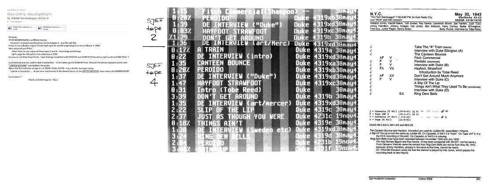

The Duke – Where
and When chronology
http://Ellingtonweb.Ca
Ellington on CD
The Dooji Collection
(Ellington record labels)
TDWAW
home page
On May 30, 1943, Duke Ellington and his orchestra were broadcast on the "Fitch Bandwagon" Sunday evening NBC Red Network radio show sponsored by F.W. Fitch Co. for its Fitch Shampoo and related personal care products. Ellington's episode included announcements, music by Ellington's orchestra, and an interview of Duke interspersed between musical selections.
At the time, Ellington and his orchestra were playing an extended engagement at the Hurricane Restaurant in New York. Stratemann says this broadcast was one of the few times the full Ellington band appeared outside the Hurricane during the residency, but others believe Ellington's broadcast was not live, but rather, the broadcast of a transcription disc using previously recorded material.
This webpage begins by summarizing the reports and discussions, followed by NBC's script for the Ellington broadcast, , and finally, a complete list of Fitch Bandwagon programs by year.
The NBC records were provided by record producer Carl A. Hällström from his research of the network's files now located at the Library of Congress.
It seems most likely this broadcast was broadcast live but the original recording of the program is lost. AFRS mixed the music from this broadcast with other Ellington recordings to produce an AFRS transcription, without commercials but with a message for the Armed Forces, for later broadcast. The AFRS transcription has survived, and it is the source of disagreement.
This view is supported by Dennis Spragg of the Glenn Miller Archive:*
Compiled by
David Palmquist
Last updated
2017-04-28
To follow the technical discussion about Ellington's Fitch Bandwagon broadcast, it helps to have a little background:
Did Ellington and his orchestra play the Fitch Bandwagon broadcast live, or was the broadcast done with prerecorded material?
The late Ole J. Nielsen's discography, Jazz Records 1942-80, A discography: Vol. Six, Duke Ellington, p. 10 says
This was a rebroadcast. The numbers probably came from an earlier broadcast.
At page 8 of the International Duke Ellington Music Society DEMS bulletin 1999/1, collector and record re-issuer Jerry Valburn wrote
...Nielsen claims that the numbers on this program come from an earlier broadcast. This is not true. I was at the actual broadcast The numbers performed here are: Perdido/Duke Interview / Hayfoot, Strawfoot / Don't Get Around Much Anymore / Duke Interview / A Slip Of The Lip / Ring Dem Bells / Just As Though You Were Here / Things Ain't What They Used To Be.
My own source material comes from both an AFRS 16 inch transcription called FITCH BANDWAGON No 31 (series later changed to just BANDWAGON) and some glass base acetates in my collection.(all this material is now at the Library of Congress)...
On page 20 of DEMS bulletin 99/3, the late Sjef Hoefsmit discussed the recordings in the Fitch Bandwagon broadcast that were included in AFRS Jubilee transcription show number 69, assembled or dubbed in May 1944.
The Jubilee show included Canteen Bounce and Hayfoot, Strawfoot from the May 1943 Fitch Bandwagon and other music recorded November 8, 9 and 27, 1943. (The GMA catalogue lists the contents of Jubilee program 69.)
Herr Hoefsmit went on to discuss the Fitch Bandwagon recording of Just As Though You Were Here, saying it is identical to the November 19, 1942 NBC Blue Network broadcast from Fort Dix. He wrote
If Jerry was present during the recording of Just As Though You Were Here on 30May43, the date of 19Nov42 must also be false. Is it possible that Just As Though You Were Here was recorded not on 30May43 but earlier, on 19Nov42, together with two other selections not in Jerry's listing but included on my tape with the re-broadcast of the Fitch Bandwagon: a longer version of Perdido and the closing Goin' Up? These two selections have also been compared with the 19Nov42 selections and found to be identical.
I have read this explanation several times,and I must say that it is hard to understand. Because of this difficulty, here are the four broadcasts in question,...
[He then lists and analyzes Jubilee program #1, Coca Cola Spotlight Bands (Fort Dix), the hypothetical original broadcast tape, and Jubilee program #69. ]
At pages 6 & 7 of DEMS 99/4, Klaus Götting said the Fitch Bandwagon recording of A Slip of the Lip, was identical to a recording made July 26, 1942. Herr Hoefsmit agreed and went on to discuss the different taped versions of the broadcast held by collectors.
Herr Hoefsmit stated the show included a four part interview with Duke, and described a hypothetical Tape #1, being a full recording of the actual broadcast.
He suggested Tape #2 was made from Tape #1, focusing on the spoken word rather than the music. The entire Fitch commercial and the interview segments were on this tape, but the musical selections were truncated. The tape ends with the introduction to A Slip of the Lip.
Sjef then suggests Tape #3 was dubbed from Tape #2, starting at the end of the Fitch advertisement. From here, the tape is identical to Tape #2 except for the length of the silence between an interrupted Hayfoot, Strawfoot and the beginning of the mutilated Don't Get Around Much Anymore. After the third interview segment, however, this tape used the RCA Victor recording of A Slip of the Lip.
Tape #4 begins with an introduction:
A Special Service Re-broadcast featuring the most popular dance orchestras in America for all the armed forces in the United Nations. Here comes the Bandwagon..."[emphasis added]
Herr Hoefsmit speculated that since this was a re-broadcast, there must have been original broadcast which he calls Tape #1. He did not have a Tape #1, its existence was hypothetical.
Next, Herr Hoefsmit quoted a typewritten script dated May 28, 1943 for the May 30 Fitch Bandwagon broadcast provided by Herr Hällström (reproduced at the end of this webpage).
Herr Hoefsmit suggests the script indicates an original tape (Tape #1), with his Tape #4 being the rebroadcast.
Tape #4 begins
A Special Service Re-broadcast featuring the most popular dance orchestras in America for all the armed forces in the United Nations. Here comes the Bandwagon...
He continues:
This tape starts straight after the introduction (see earlier in this article) with Take The "A" Train, followed by interview A and The Canteen Bounce. The Fitch commercial is skipped from this re-broadcast, which continues with the short version of Perdido, followed by the complete interview B (as on tapes # 2 and # 3). But now there comes a complete Hayfoot, Strawfoot followed by an introduction to the next selection by Tobe Reed: the complete Don't Get Around Much Anymore.
Interview C is again the same as on tapes # 2 and # 3, but the version of A Slip Of The Lip that follows is completely different from the RCA recording. It corresponds exactly with the description in DESOR for 4319c.
This selection is followed immediately, and with no further introduction, by Just As Though You Were Here, taken from the Fort Dix broadcast of 19Nov42....
The time gained as a result of the deletion of the Fitch commercials and the News Spot is now occupied by recordings of earlier broadcasts! It is indeed a re-broadcast!
After the substituted Just As Though You Were Here, comes (again without any introduction) Things Ain't What They Used To Be followed by interview D and the performance of Ring Dem Bells, all from the original broadcast, conjectured tape # 1. The re-broadcast concludes with two other selections from the Fort Dix broadcast, Perdido and Goin' Up.
My tape # 4 ends with the words: "The Bandwagon was brought to you, solders, sailors and marines in the Armed Forces of the United Nations, by the Special Service Division of the War Department of the United States of America."
Not once on tape # 4 do I hear the name Fitch.
Webmaster's comment:
At first blush, it might seem Tape #4 was from a much later rebroadcast since the United Nations was not formed until October 1945.
On January 1 and 2, 1942, however, 26 countries executed a "declaration of united nations," forming an alliance against the Axis powers. This pact was called the United Nations in the American press.
The Treasury Shows:
According to Storyville Records, 48 LPs of the Ellington broadcasts for the U.S. Treasury Department radio shows were issued on a private pressing during the 1960s [sic]. Storyville undertook to release these on CD, and as at the time of writing, has issued 20 two-disc sets.
D.E.T.S. Volume 16 includes the Fitch Bandwagon broadcast. Roger Boyes, author of the D.E.T.S. booklet, wrote the May 30 1943 broadcast is here issued commercially for the first time
. The track timings add up to 21 minutes and 23 seconds, but Mr. Boyes says Stratemann and Vail show a 30-minute broadcast.
Mr. Boyes continues
Though designed to give the impression that the Ellington Orchestra was in the studio, to perform between the various stages of a conversation between Duke and an unidentified interviewer, all the music originates in existing recordings available to the broadcaster. Duke's discographers in New DESOR [sic] mention three, although their information is not wholly accurate. My hunch is that all the music is from late May airchecks, and that everything was then put together, and transmitted on 30 May.
Herr Hällström:
Jerry [Valburn] could never locate the network version and had to settle for the edited AFRS version which had the ad talks removed and replaced with tunes from other Ellington broadcasts of the period.
You need to have a script or a recording of the network broadcast in order to be able to understand what has been done to the transcription.
New Desor Correction Sheet 1011 lists the personnel as:
DUKE ELLINGTON AND HIS ORCHESTRA
W. Jones, Baker, Jordan, Nance, Brown, Nanton, Tizol, Hamilton, Hodges, Nat Jones, Webster, Carney, Ellington, Guy, Raglin, Greer, Roché
At the time of writing, the Duke Ellington Panorama and Ellingtonia.com on-line discographies list the same personnel. The personnel list in the D.E.T.S. booklet does not name the singers (Roché is not listed with the band personnel at all) but their vocals are heard on the C.D.
The lists for Tapes 2 and 4 were provided by Klaus Götting:

click to enlarge
Both tapes originated with Jerry Valburn.
| Script (NBC files) | Valburn's acetate | Hoefsmit's tape 2 | Hoefsmit's tape 4 | DEMS 99/3 | NDCS 1011 | DETS 16 disc 2 |
| Opening theme for Fitch Bandwagon |
. | . | . | . | . | . |
| Annouuncement and advertising jingle |
. | Commercial. | . | . | . | . |
| NBC announcer introduces host Tobe Reed as the "Driver of the Bandwagon." |
. | . | . | . | . | . |
| Reed announces the show, followed by Music: Take The "A" Train. |
Music: Perdido | Music: Perdido | Music: Take The "A" Train | Music: Take The "A" Train | Music: Take The "A" Train | As the announcer introduces the show as a rebroadcast, music (Take The "A" Train) starts in the background. |
| Reed begins to interview Ellington. |
Interview | Interview | Interview | Intro with Duke Ellington | NDCS notes the interview at the end of its playlist. | Reed interviews Ellington, following the script reasonably closely. |
| Music: Canteen Bounce |
. | Music: Canteen Bounce | . | Music: The Canteen Bounce | Music: The Canteen Bounce |
Music: Canteen Bounce |
| Commercial message |
. | . | . | Fitch commercial | . |
. |
| Music: Handwritten note says Things |
. | . | Music: Perdido | Music: Perdido | Music: Perdido |
Music: Perdido |
| Dialogue, Reed and Ellington |
. | . | Dialogue, Reed and Ellington | Dialogue, Reed and Ellington | Noted at the end of the playlist | Dialogue, Reed and Ellington |
| Music: Hayfoot, Strawfoot |
Music: Hayfoot, Strawfoot | Music: Hayfoot, Strawfoot | Music: Hayfoot, Strawfoot | Music: Hayfoot, Strawfoot | Music: Hayfoot,Strawfoot (Get Hep) |
Music: Hayfoot, Strawfoot |
| Reed introduces the next tune. Music: Don't Get Around Much Anymore |
Don't Get Around Much Anymore | Don't Get Around Much Anymore | Introduction Music: Don't Get Around Much Anymore |
Music: Don't Get Around Much Anymore | Music: Don't Get Around Much Anymore |
Introduction Music: Don't Get Around Much Anymore |
| Dialogue, Reed and Ellington |
Dialogue, Reed and Ellington |
. | Dialogue, Reed and Ellington | Dialogue, Reed and Ellington | Noted at the end of the playlist | Dialogue, Reed and Ellington |
| Music: A Slip Of The Lip |
Music: A Slip Of The Lip | . | Music: A Slip Of The Lip | Music: A Slip Of The Lip | Music: A Slip Of The Lip |
Music: A Slip Of The Lip |
| . |
Music: Ring Dem Bells | . | . | . | . |
. |
| . |
Music: Just As Though You Were Here | . | Music: Just As Though You Were Here | Music: Just As Though You Were Here | . |
. |
| Commercial message |
. | . | . | . | . | . |
| Music: Things Ain't What They Used To Be |
Music: Things Ain't What They Used To Be | . | Music: Things Ain't What They Used To Be |
Music: Things Ain't What They Used To Be | Music: Ring Dem Bells |
Music: Things Ain't What They Used To Be |
| Dialogue, Reed and Ellington |
. | . | Dialogue, Reed and Ellington | Dialogue, Reed and Ellington | Noted at the end of the playlist | . |
| Music: Ring Dem Bells |
. | . | Music: Ring Dem Bells | Music: Ring Dem Bells | Music: Things Ain't What They Used To Be |
Music: Ring Dem Bells |
| . |
. | . | Music: Perdido | Music: Perdido | . |
. |
| . |
. | . | Music: Goin' Up | Music: Goin' Up | . |
. |
| Music: Fitch signature. |
. | . | . | . | . | . |
| Reed: concluding remarks, announces next Bandwagon Cut to news from Chicago and sign-off. |
. | . | . | . | . | . |
The script was written May 28. It seems likely to have been meant to be used in a live broadcast on May 30. If so, then it seems clear that Duke Ellington and His Orchestra appeared live on the May 30 Fitch Bandwagon show.
A skeptic would suggest the script was just a road map to guide the technicians in assembling the recordings to be dubbed onto a transcription to be aired May 30. This scenario seems unlikely, since the work would have to be done in only two days, leaving no margin of error.
There seems to be little question the Fitch Bandwagon broadcast featuring Duke Ellington and his Orchestra was broadcast live but the original recording of the program is lost.
To paraphrase Carl A. Hällström:
If you are going to document the SSD/AFRS transcription of Ellington's Fitch Bandwagon, you should be aware that it is edited. All the ads have been removed and replaced by tracks of the Ellington orchestra from other broadcast series.
You need to have a script or a recording of the network broadcast in order to be able to understand what has been done to the transcription.
[Webmaster's note:
The text of the script differs from the words spoken in the DETS recording. Here, I struck-through words in the script that are omitted from the recording, and underlined words on the recording that are not in the script. Punctuation is largely as in the script, although I changed some capitalization.]
FITCH BANDWAGON: | ||
|---|---|---|
| . |
THE FITCH BANDWAGON Sunday, May 30, 1943 7:30-8:00 PM EWT, NBC, Radio City, New York, NY over local station WEAF & NBC Red network [Hällström's note: Typewritten script prepared 5/28/43, hand-written timings probably added during the rehearsal or actual broadcast.] MUSIC -- FITCH SIGNATURE Announcer: Here comes the Fitch Bandwagon! Vocal: Laugh a while, let a song be your style. Announcer: Another Sunday evening rolls around, and the old Fitch Bandwagon rolls around with it, bringing you its cargo of the famous Fitch's Dandruff Remover Shampoo and Ideal Hair Tonic, the music of one of America's famous orchestras, and the new cargo of World News by Alex Dreier. That's a big cargo to handle, but not too much for our old friend the Driver of the Bandwagon, that Man who Knows His Bands. Tobe Reed. (APPLAUSE) Tobe: Ah thank you Jack Costello, and hello everybody. Before we start the old Bandwagon rolling, we'd like to pause a moment and pay humble tribute to the occasion we celebrate on this May 30th. Originally we thought only of the brave men who fought to preserve the Union when we celebrated Decoration Day. However, the day has come to mean more to us than just that. It is a day we pay tribute to all brave men who have fallen in the cause of freedom, equality, and justice for all. Our thoughts turn to our boys in all parts of the world who are serving the same cause their grandfathers and great grandfathers served. freedom for all peoples. (1:30) (APPLAUSE) Well passengers, the Bandwagon gets under way now, and we really have a supply of musical power. We present a man honored in this country and abroad for his contributions to modern music in general, and American music in particular. If more need be said, let his music say it for me. (APPLAUSE) "A special services rebroadcast featuring the most popular dance orchestras in America for all you men and women in the Armed Forces of the United Nations. Here comes the Bandwagon." MUSIC -- DUKE'S THEME [Take the A Train plays for 24 seconds over applause.] (APPLAUSE) AUDIENCE APPLAUSE FADES ON CUE FOR Tobe: Ah yes, the one and only Duke Ellington and his orchestra. You know, it's the first time the old Bandwagon has caught up with the Duke in person, but believe me, he's been with us in spirit ever since we first started rolling. Yes, Duke your compositions have made up a large portion of the Bandwagon's cargo ever since we first hit the air lanes. Duke: That sure is mighty nice to hear, and I only hope we can play other people's music as well as you've presented ours. Tobe: I'm sure I wouldn't lose any sleep worrying over that, and I'm sure the composer of "Canteen Bounce" feels the same way as Duke Ellington and the boys get under way. And here it is, MUSIC -- CANTEEN BOUNCE (APPLAUSE) Announcer: (Commercial) (4:30) Tobe: Jack we've really had a number of especially nice, sunshiny days lately. Jack: Yes, Tobe - and with the girls going hatless, they want the summer sunshine to help bring out the natural highlights in their hair. They want their hair to be sparkling and radiant. That means Fitch Shampoo -- yes, Fitch Shampoo doesn't leave soap film and curd deposits which make the hair dull and drab. Furthermore - Fitch Shampoo is the ONLY Shampoo made whose guarantee to remove dandruff with the first application bears the backing of one of the world's largest insurance firms. The reason Fitch Shampoo makes all this difference is because IT IS so different. even applied differently. Fitch's applied to the hair and scalp before a drop of water is added. Undiluted Fitch Shampoo penetrates the tiny hair openings, dissolving dandruff. Then - in the rich creamy lather that works up with the addition of soft or hard water - all those accumulations of dust, dirt and dandruff are carried off. So - after a Fitch Shampoo, the hair is antiseptically clean. It's full of life. and sparkle. and luster. For beautiful hair, everyone should have a regular weekly Fitch Shampoo. So - at your barber or beauty shop, ask for a professional Fitch application - or, buy a bottle of Fitch Shampoo, spelled f i t c h - Fitch Shampoo - at your drug counter. (5: Hand-written note: Orch: Things (5:50-6:20) [ Carl Hällström's note: - the tune played is actually PERDIDO! ] [DETS plays Perdido, with no preceding announcement, fading to] Tobe: I wonder how many of you passengers would applaud if someone stepped out on a stage and announced Edward Kennedy Ellington? Duke: Sometimes I wonder! You know it seems to be I've never been anything else than Duke. I hardly know the other name myself. Tobe: I understand you've had the name Duke since you were well about twelve years old. Duke: That's right. A publicity man once tried to tie it up with my taste in clothes, but you know that a kid of twelve doesn't go around looking like a Duke. Tobe: Well I suppose you are you're right there, Duke. However, it could be the reason today that as I've never seen you when you weren't immaculate, and dressed in perfect taste. But then let's stick to those early days for a while Duke Duke: Well, I don't think I got into music at all. I think Music got into me. My first intention was to go to Art School and study Fine Arts. Tobe: Well, for my money what you're doing today is Duke: Well, when I was in High School I worked as a soda jerker in a place where they had a pianist. When the pianist was off, I got to fooling around on the piano. (7:25) Tobe: Now wait a minute, Duke, Duke: Well I had a little elementary piano and harmony but I was afraid to go too far with the conservatory training Tobe: Well, your compositions have certainly justified your viewpoint MUSIC -- HAY FOOT STRAW FOOT (9:50) (APPLAUSE) (10:00) Tobe: [Inaudible comment] I can see they liked that, Duke. We can't go much further in a program featuring Duke Ellington without having the Duke play one of his own tunes. You know, after such hits as "Mood Indigo", [well] "It Don't Mean A Thing If You Ain't Got That Swing", "Sophisticated Lady", "Solitude" and "I Let A Song Go Out Of My Heart". I could go on here all night this way. Anyway we've So here's the tune that's sweeping the country today, played by the composer with his own orchestra. Duke Ellington's MUSIC -- DON'T GET AROUND MUCH ANYMORE (12:10) (APPLAUSE) (13:35) Tobe: [inaudible] - had the music of the Duke with Johnny Hodges featured with the saxophone and Don't Get Around Anymore. You know, I'd like to hear more of the early days when Duke Ellington was just sorta "fooling around" on the piano as he calls it. What else were you doing then Duke? Duke: Well, like I told you, I had art on the mind. After High School, I won a scholarship to Pratt Institute. To study art, but the nearest I came to it was painting signs, and there again, I ran smack into music. Tobe: Now, wait, wait a minute, pull over. Duke: Well, when an organization came to me to paint a sign advertising their dance. Well, I, I can make you, I can make you...Well, You can make your own guess [giggling] [ Carl A. Hällström's note: Tobe: I see exactly what you mean, Duke. You know, speaking of signs and that sort of thing, and this has nothing to do with it, but Duke: There were a few other side tracks, and one of them was very valuable. I was born in Washington, D.C. and I worked for a time as Transportation Clerk in the War and Navy Department Buildings. Man, I got so I could tell you time tables by memory, and how to get to any part of the country. Toby: I can see how that was valuable, with the road tours you've taken since with the orchestra. You know Duke, the Bandwagon is doing the same for me, with the way we get around. Speaking of getting around the country, I hear Duke: That's right, and I'm mighty proud of Mercer too. He was at Camp Dix for a while, and now he's at Camp Croft in South Carolina. (15:40) Tobe: Well, I Duke: Following, but not too closely. I guess Mercer feels about Tobe: Duke: If you don't mind, I'd like to dedicate it to Mercer and all his Buddies, because it's a tune with a mighty good thought. He calls it "A Slip Of The Lip Might Sink A Ship." Tobe: Sounder advice was never set to music, Duke. Let's hear Mercer Ellington's tune with Ray Nance doing the vocal honors. "A Slip Of The Lip Might Sink A Ship." (16:25) MUSIC -- A SLIP OF THE LIP MIGHT SINK A SHIP (18:45) (APPLAUSE) Announcer: COMMERCIAL (18:55) Tobe: Jack, you've been eyeing the microphone as if you couldn't wait to tear it away from me. Jack: Truthfully, Tobe - that's how I feel. So many men have switched to Fitch No-Brush Shaving Cream that I just want to get up and tell the reasons why. You know - soon there are going to be a lot of new, sore sunburned faces. Faces that will cringe at the thought of shaving. But with the switch to Fitch's No-Brush - these sensitive sunburned faces will feel the benefits of the special "skin conditions." For - actually - men - this wonderful "skin conditions" in Fitch No-Brush prepares the tenderest, most sensitive face for a cool, relaxing shave. That's point one! Then, point two - there are special shaving properties in Fitch No-Brush which make for a closer, easier shave even against the grain of the beard. And - point three - right in this one easy-to-use shaving cream are contained all the ingredients of your after-shaving lotions. No more setting out several different shaving preparations, no more jar juggling. Remember - this one great shaving cream supplies all three needs. Remember, too - Fitch's No-Brush is designed especially for sensitive skins. even sensitive skins with tough beards. Fitch's Lather type also contains this same wonderful "skin conditions." At your drug counter, ask for Fitch's No-Brush or Lather Type Shaving Cream. in handy glass jars - 25 and 50 cents. (19:00) MUSIC -- THING'S AIN'T WHAT THEY USED TO BE (19:40) Tobe: [over music: You know, passengers, There are few men who in their own lifetime are lucky enough to receive recognition and acclaim for their efforts when they have held to ideas that were very new and very radical. Our guest Duke Ellington is one of these lucky few. Duke came to New York in 1923 with a brand of music that no one had heard before, and five mighty good musicians to play it. Duke: Well, I couldn't have done it if those Tobe: And how the band has grown up since then! First came the old Cotton Club in Harlem, then Flo Ziegfeld featured them in "Show Girl" and, then came the European tours didn't they, Duke? Duke: That's right. One in 1933 and another Tobe: All I can say is that it's a far yodel from the little boy who was a soda jerker down in Washington, D.C. and I can bring that up to date by touching lightly on the Duke: Yes, that's right. I hope to soon have a book out with the same title, which will further explain the music. Tobe: Well, we'll be looking forward to that book, believe me, Duke I sure do, [inaudible] sure do my best to help you out. Tobe: Well, it seems all your old fans want something out of the old days when you first began to attract attention Duke: Well, there's one tune that I think is typical of those days. It might be a bit dusty, but perhaps we can polish it off Tobe: MUSIC -- RING DEM BELLS (25:20) (APPLAUSE) [end of DETS 16 recording] MUSIC - FITCH'S SIGNATURE (25:55) Tobe: And that puts a very solid tag on a visit with one of the country's most famous orchestra leaders and composers. Duke Ellington. So now as the Duke heads back to the Hurricane Restaurant where he's currently appearing, we head the old Bandwagon out to Cleveland for a visit with one of our old regulars. Horace Heidt and his Musical Knights, and with Horace on board, you can be sure of an entertaining ride. Well passengers, Alex Dreier will take over the Bandwagon in a moment to bring you the very latest in World News, so this is your Bandwagon Driver Tobe Reed, saying a good buy is United States War Saving Bond.. Come in Alex Dreier. (26:30) Dreier: NEWS SPOT Announcer: CLOSING COMMERCIAL Announcer: After and between Fitch Shampoos, you can keep your hair shining and manageable by using a few drops of Fitch's Ideal Hair Tonic every day. Fitch's Ideal Hair Tonic is not sticky or greasy. yet it gives your hair that well-groomed look. And remember - men - give Fitch's Shaving Cream a try. Ask for it at your drug counter in the handy glass jar. Either No-Brush or Lather type - generous 25 and 50 cent sizes! Announcer: The Bandwagon with the music of Duke Ellington and World News with Alex Dreier, was brought to you by the F.W. Fitch Company. Horace Heidt will appear through the courtesy of Lewis Howe Company, makers of Tams. The program originated in New York and Chicago. Jack Costello speaking. This is The National Broadcasting Company. |
. |
This document lists the Fitch Bandwagon radio shows from September 4, 1938 to January 13, 1946, copied from the NBC Collections at the Library of Congress.
| [NBC program card.] |
|
| Client: | F.W. Fitch Co. |
| Agency: | L.W. Ramsey Co., Des Moines, IA |
| Product: | Fitch Shampoo. |
| Program description: | Famous American dance orchestras will be featured - a different one each week. Incidents from bandleader's life are dramatized. |
| 1938 (7:30-8:00 WEAF and Red Network) | |||||||||||||||||||||||||||||||||||||||||||||||||||||||||||||||||||||||||||||||||||||||||||||||||||||||||||||||||||||||||||||||||||||||||||||||||||||||||||||||||||||||||||||||||||||||||||||||||||||||||||||||||||||||||||||||||||||||||||||||||||||||||||||||||||||||||||||||||||||||||||||||||||||||||||||||||||||||||||||||||||||||||||||||||||||||||||||||||||||||||||||||||||||||||||||||||||||||||||||||||||||||||||||||||||||||||||||||||||||||||||||||||||||||||||||||||||||||||||||||||||||||||||||||||||||||||||||||||||||||||||||||||||||||||||||||||||||||||||||||||||||||||||||||||||||||||||||||||||||||||||||||||||||||||||||||||||||||||||||||||||||||||||||||||||||||||||||||
| September 4 |
The Lombardos, from Detroit. Vocalist: Carmen Lombardo; announcer: George Hogan. Smile For Me (signature) - Auld Lang Syne (Lombardo theme music) -I've Got A Pocketful Of Dreams - Commercial on Fitch Shampoo - George Hogan interviews the Lombardo brothers - When You Wore A Tulip - Is That The Way To Treat A Sweetheart vCL - More talk between the Lombardos and Hogan - Medley: Coquette; Sweethearts On Parade vCL - Commercial - Boo Hoo vCL - More talk - You're Driving Me Crazy - Dancing In The Dark - Announcement on voting for band to appear on Bandwagon - Girl Friend Of A Whirling Dervish (from "Garden Of The Moon") - Smile For Me and signoff. |
||||||||||||||||||||||||||||||||||||||||||||||||||||||||||||||||||||||||||||||||||||||||||||||||||||||||||||||||||||||||||||||||||||||||||||||||||||||||||||||||||||||||||||||||||||||||||||||||||||||||||||||||||||||||||||||||||||||||||||||||||||||||||||||||||||||||||||||||||||||||||||||||||||||||||||||||||||||||||||||||||||||||||||||||||||||||||||||||||||||||||||||||||||||||||||||||||||||||||||||||||||||||||||||||||||||||||||||||||||||||||||||||||||||||||||||||||||||||||||||||||||||||||||||||||||||||||||||||||||||||||||||||||||||||||||||||||||||||||||||||||||||||||||||||||||||||||||||||||||||||||||||||||||||||||||||||||||||||||||||||||||||||||||||||||||||||||||||
| September 11 | Richard Himber and his orchestra, from New York, Stuart Allen, vocalist. Pat Barnes as Master of Ceremonies. | ||||||||||||||||||||||||||||||||||||||||||||||||||||||||||||||||||||||||||||||||||||||||||||||||||||||||||||||||||||||||||||||||||||||||||||||||||||||||||||||||||||||||||||||||||||||||||||||||||||||||||||||||||||||||||||||||||||||||||||||||||||||||||||||||||||||||||||||||||||||||||||||||||||||||||||||||||||||||||||||||||||||||||||||||||||||||||||||||||||||||||||||||||||||||||||||||||||||||||||||||||||||||||||||||||||||||||||||||||||||||||||||||||||||||||||||||||||||||||||||||||||||||||||||||||||||||||||||||||||||||||||||||||||||||||||||||||||||||||||||||||||||||||||||||||||||||||||||||||||||||||||||||||||||||||||||||||||||||||||||||||||||||||||||||||||||||||||||
| September 18 | Ted Fio-Rito and his orchestra, from Chicago. Henry M. Neely replaces Pat Barnes as "Driver" of the Bandwagon. Dramatization of incidents in Fio-Rito's life. | ||||||||||||||||||||||||||||||||||||||||||||||||||||||||||||||||||||||||||||||||||||||||||||||||||||||||||||||||||||||||||||||||||||||||||||||||||||||||||||||||||||||||||||||||||||||||||||||||||||||||||||||||||||||||||||||||||||||||||||||||||||||||||||||||||||||||||||||||||||||||||||||||||||||||||||||||||||||||||||||||||||||||||||||||||||||||||||||||||||||||||||||||||||||||||||||||||||||||||||||||||||||||||||||||||||||||||||||||||||||||||||||||||||||||||||||||||||||||||||||||||||||||||||||||||||||||||||||||||||||||||||||||||||||||||||||||||||||||||||||||||||||||||||||||||||||||||||||||||||||||||||||||||||||||||||||||||||||||||||||||||||||||||||||||||||||||||||||
| September 25 | Shep Fields and his Rippling Rhythm orchestra, from Hollywood. | ||||||||||||||||||||||||||||||||||||||||||||||||||||||||||||||||||||||||||||||||||||||||||||||||||||||||||||||||||||||||||||||||||||||||||||||||||||||||||||||||||||||||||||||||||||||||||||||||||||||||||||||||||||||||||||||||||||||||||||||||||||||||||||||||||||||||||||||||||||||||||||||||||||||||||||||||||||||||||||||||||||||||||||||||||||||||||||||||||||||||||||||||||||||||||||||||||||||||||||||||||||||||||||||||||||||||||||||||||||||||||||||||||||||||||||||||||||||||||||||||||||||||||||||||||||||||||||||||||||||||||||||||||||||||||||||||||||||||||||||||||||||||||||||||||||||||||||||||||||||||||||||||||||||||||||||||||||||||||||||||||||||||||||||||||||||||||||||
| October 2 | Bob Crosby and his orchestra, from Chicago. | ||||||||||||||||||||||||||||||||||||||||||||||||||||||||||||||||||||||||||||||||||||||||||||||||||||||||||||||||||||||||||||||||||||||||||||||||||||||||||||||||||||||||||||||||||||||||||||||||||||||||||||||||||||||||||||||||||||||||||||||||||||||||||||||||||||||||||||||||||||||||||||||||||||||||||||||||||||||||||||||||||||||||||||||||||||||||||||||||||||||||||||||||||||||||||||||||||||||||||||||||||||||||||||||||||||||||||||||||||||||||||||||||||||||||||||||||||||||||||||||||||||||||||||||||||||||||||||||||||||||||||||||||||||||||||||||||||||||||||||||||||||||||||||||||||||||||||||||||||||||||||||||||||||||||||||||||||||||||||||||||||||||||||||||||||||||||||||||
| October 9 | Abe Lyman and his orchestra, from Chicago. | ||||||||||||||||||||||||||||||||||||||||||||||||||||||||||||||||||||||||||||||||||||||||||||||||||||||||||||||||||||||||||||||||||||||||||||||||||||||||||||||||||||||||||||||||||||||||||||||||||||||||||||||||||||||||||||||||||||||||||||||||||||||||||||||||||||||||||||||||||||||||||||||||||||||||||||||||||||||||||||||||||||||||||||||||||||||||||||||||||||||||||||||||||||||||||||||||||||||||||||||||||||||||||||||||||||||||||||||||||||||||||||||||||||||||||||||||||||||||||||||||||||||||||||||||||||||||||||||||||||||||||||||||||||||||||||||||||||||||||||||||||||||||||||||||||||||||||||||||||||||||||||||||||||||||||||||||||||||||||||||||||||||||||||||||||||||||||||||
| October 16 | Leo Reisman and his orchestra, from New York. Felix Knight, tenor, Ann Graham, canary. | ||||||||||||||||||||||||||||||||||||||||||||||||||||||||||||||||||||||||||||||||||||||||||||||||||||||||||||||||||||||||||||||||||||||||||||||||||||||||||||||||||||||||||||||||||||||||||||||||||||||||||||||||||||||||||||||||||||||||||||||||||||||||||||||||||||||||||||||||||||||||||||||||||||||||||||||||||||||||||||||||||||||||||||||||||||||||||||||||||||||||||||||||||||||||||||||||||||||||||||||||||||||||||||||||||||||||||||||||||||||||||||||||||||||||||||||||||||||||||||||||||||||||||||||||||||||||||||||||||||||||||||||||||||||||||||||||||||||||||||||||||||||||||||||||||||||||||||||||||||||||||||||||||||||||||||||||||||||||||||||||||||||||||||||||||||||||||||||
| October 23 | Roger Pryor and his orchestra, from New York. Lane Truesdale and Mr. Pryor, soloists. | ||||||||||||||||||||||||||||||||||||||||||||||||||||||||||||||||||||||||||||||||||||||||||||||||||||||||||||||||||||||||||||||||||||||||||||||||||||||||||||||||||||||||||||||||||||||||||||||||||||||||||||||||||||||||||||||||||||||||||||||||||||||||||||||||||||||||||||||||||||||||||||||||||||||||||||||||||||||||||||||||||||||||||||||||||||||||||||||||||||||||||||||||||||||||||||||||||||||||||||||||||||||||||||||||||||||||||||||||||||||||||||||||||||||||||||||||||||||||||||||||||||||||||||||||||||||||||||||||||||||||||||||||||||||||||||||||||||||||||||||||||||||||||||||||||||||||||||||||||||||||||||||||||||||||||||||||||||||||||||||||||||||||||||||||||||||||||||||
| October 30 | Freddie Martin and his orchestra, from San Francisco. | ||||||||||||||||||||||||||||||||||||||||||||||||||||||||||||||||||||||||||||||||||||||||||||||||||||||||||||||||||||||||||||||||||||||||||||||||||||||||||||||||||||||||||||||||||||||||||||||||||||||||||||||||||||||||||||||||||||||||||||||||||||||||||||||||||||||||||||||||||||||||||||||||||||||||||||||||||||||||||||||||||||||||||||||||||||||||||||||||||||||||||||||||||||||||||||||||||||||||||||||||||||||||||||||||||||||||||||||||||||||||||||||||||||||||||||||||||||||||||||||||||||||||||||||||||||||||||||||||||||||||||||||||||||||||||||||||||||||||||||||||||||||||||||||||||||||||||||||||||||||||||||||||||||||||||||||||||||||||||||||||||||||||||||||||||||||||||||||
| November 6 | Eddy Duchin and his orchestra, from New York. | ||||||||||||||||||||||||||||||||||||||||||||||||||||||||||||||||||||||||||||||||||||||||||||||||||||||||||||||||||||||||||||||||||||||||||||||||||||||||||||||||||||||||||||||||||||||||||||||||||||||||||||||||||||||||||||||||||||||||||||||||||||||||||||||||||||||||||||||||||||||||||||||||||||||||||||||||||||||||||||||||||||||||||||||||||||||||||||||||||||||||||||||||||||||||||||||||||||||||||||||||||||||||||||||||||||||||||||||||||||||||||||||||||||||||||||||||||||||||||||||||||||||||||||||||||||||||||||||||||||||||||||||||||||||||||||||||||||||||||||||||||||||||||||||||||||||||||||||||||||||||||||||||||||||||||||||||||||||||||||||||||||||||||||||||||||||||||||||
| November 13 | Ozzie Nelson and his orchestra, from Chicago. | ||||||||||||||||||||||||||||||||||||||||||||||||||||||||||||||||||||||||||||||||||||||||||||||||||||||||||||||||||||||||||||||||||||||||||||||||||||||||||||||||||||||||||||||||||||||||||||||||||||||||||||||||||||||||||||||||||||||||||||||||||||||||||||||||||||||||||||||||||||||||||||||||||||||||||||||||||||||||||||||||||||||||||||||||||||||||||||||||||||||||||||||||||||||||||||||||||||||||||||||||||||||||||||||||||||||||||||||||||||||||||||||||||||||||||||||||||||||||||||||||||||||||||||||||||||||||||||||||||||||||||||||||||||||||||||||||||||||||||||||||||||||||||||||||||||||||||||||||||||||||||||||||||||||||||||||||||||||||||||||||||||||||||||||||||||||||||||||
| November 20 | Buddy Rodgers and his orchestra, from Chicago. Elizabeth ("Liz") Tilton, canary. | ||||||||||||||||||||||||||||||||||||||||||||||||||||||||||||||||||||||||||||||||||||||||||||||||||||||||||||||||||||||||||||||||||||||||||||||||||||||||||||||||||||||||||||||||||||||||||||||||||||||||||||||||||||||||||||||||||||||||||||||||||||||||||||||||||||||||||||||||||||||||||||||||||||||||||||||||||||||||||||||||||||||||||||||||||||||||||||||||||||||||||||||||||||||||||||||||||||||||||||||||||||||||||||||||||||||||||||||||||||||||||||||||||||||||||||||||||||||||||||||||||||||||||||||||||||||||||||||||||||||||||||||||||||||||||||||||||||||||||||||||||||||||||||||||||||||||||||||||||||||||||||||||||||||||||||||||||||||||||||||||||||||||||||||||||||||||||||||
| November 27 | Frankie Masters and his orchestra, from Chicago. | ||||||||||||||||||||||||||||||||||||||||||||||||||||||||||||||||||||||||||||||||||||||||||||||||||||||||||||||||||||||||||||||||||||||||||||||||||||||||||||||||||||||||||||||||||||||||||||||||||||||||||||||||||||||||||||||||||||||||||||||||||||||||||||||||||||||||||||||||||||||||||||||||||||||||||||||||||||||||||||||||||||||||||||||||||||||||||||||||||||||||||||||||||||||||||||||||||||||||||||||||||||||||||||||||||||||||||||||||||||||||||||||||||||||||||||||||||||||||||||||||||||||||||||||||||||||||||||||||||||||||||||||||||||||||||||||||||||||||||||||||||||||||||||||||||||||||||||||||||||||||||||||||||||||||||||||||||||||||||||||||||||||||||||||||||||||||||||||
| December 4 | Tommy Dorsey and his orchestra, from New York. Announcers: Henry M. Neely and Jack Costello. Fitch signature: Smile For Me - IGSOY - Hawaiian War Chant - Two Sleepy People vEW - Fitch commercial - I Know That You Know - A lesson in Swing Language - Marie vJL&band - Song Of India - Fitch commercial - Change Partners - Tommy Dorsey at home - Davenport Blues - IGSOY - Fitch signature and closing remarks. | ||||||||||||||||||||||||||||||||||||||||||||||||||||||||||||||||||||||||||||||||||||||||||||||||||||||||||||||||||||||||||||||||||||||||||||||||||||||||||||||||||||||||||||||||||||||||||||||||||||||||||||||||||||||||||||||||||||||||||||||||||||||||||||||||||||||||||||||||||||||||||||||||||||||||||||||||||||||||||||||||||||||||||||||||||||||||||||||||||||||||||||||||||||||||||||||||||||||||||||||||||||||||||||||||||||||||||||||||||||||||||||||||||||||||||||||||||||||||||||||||||||||||||||||||||||||||||||||||||||||||||||||||||||||||||||||||||||||||||||||||||||||||||||||||||||||||||||||||||||||||||||||||||||||||||||||||||||||||||||||||||||||||||||||||||||||||||||||
| December 11 | Jan Garber and his orchestra, from Chicago. | ||||||||||||||||||||||||||||||||||||||||||||||||||||||||||||||||||||||||||||||||||||||||||||||||||||||||||||||||||||||||||||||||||||||||||||||||||||||||||||||||||||||||||||||||||||||||||||||||||||||||||||||||||||||||||||||||||||||||||||||||||||||||||||||||||||||||||||||||||||||||||||||||||||||||||||||||||||||||||||||||||||||||||||||||||||||||||||||||||||||||||||||||||||||||||||||||||||||||||||||||||||||||||||||||||||||||||||||||||||||||||||||||||||||||||||||||||||||||||||||||||||||||||||||||||||||||||||||||||||||||||||||||||||||||||||||||||||||||||||||||||||||||||||||||||||||||||||||||||||||||||||||||||||||||||||||||||||||||||||||||||||||||||||||||||||||||||||||
| December 18 | Benny Goodman and his orchestra, from New York. | ||||||||||||||||||||||||||||||||||||||||||||||||||||||||||||||||||||||||||||||||||||||||||||||||||||||||||||||||||||||||||||||||||||||||||||||||||||||||||||||||||||||||||||||||||||||||||||||||||||||||||||||||||||||||||||||||||||||||||||||||||||||||||||||||||||||||||||||||||||||||||||||||||||||||||||||||||||||||||||||||||||||||||||||||||||||||||||||||||||||||||||||||||||||||||||||||||||||||||||||||||||||||||||||||||||||||||||||||||||||||||||||||||||||||||||||||||||||||||||||||||||||||||||||||||||||||||||||||||||||||||||||||||||||||||||||||||||||||||||||||||||||||||||||||||||||||||||||||||||||||||||||||||||||||||||||||||||||||||||||||||||||||||||||||||||||||||||||
| December 25 | Herbie Kay and his orchestra, from Chicago. | ||||||||||||||||||||||||||||||||||||||||||||||||||||||||||||||||||||||||||||||||||||||||||||||||||||||||||||||||||||||||||||||||||||||||||||||||||||||||||||||||||||||||||||||||||||||||||||||||||||||||||||||||||||||||||||||||||||||||||||||||||||||||||||||||||||||||||||||||||||||||||||||||||||||||||||||||||||||||||||||||||||||||||||||||||||||||||||||||||||||||||||||||||||||||||||||||||||||||||||||||||||||||||||||||||||||||||||||||||||||||||||||||||||||||||||||||||||||||||||||||||||||||||||||||||||||||||||||||||||||||||||||||||||||||||||||||||||||||||||||||||||||||||||||||||||||||||||||||||||||||||||||||||||||||||||||||||||||||||||||||||||||||||||||||||||||||||||||
| 1939 | |||||||||||||||||||||||||||||||||||||||||||||||||||||||||||||||||||||||||||||||||||||||||||||||||||||||||||||||||||||||||||||||||||||||||||||||||||||||||||||||||||||||||||||||||||||||||||||||||||||||||||||||||||||||||||||||||||||||||||||||||||||||||||||||||||||||||||||||||||||||||||||||||||||||||||||||||||||||||||||||||||||||||||||||||||||||||||||||||||||||||||||||||||||||||||||||||||||||||||||||||||||||||||||||||||||||||||||||||||||||||||||||||||||||||||||||||||||||||||||||||||||||||||||||||||||||||||||||||||||||||||||||||||||||||||||||||||||||||||||||||||||||||||||||||||||||||||||||||||||||||||||||||||||||||||||||||||||||||||||||||||||||||||||||||||||||||||||||
| January 1 | Art Kassel and his orchestra, from Chicago. | ||||||||||||||||||||||||||||||||||||||||||||||||||||||||||||||||||||||||||||||||||||||||||||||||||||||||||||||||||||||||||||||||||||||||||||||||||||||||||||||||||||||||||||||||||||||||||||||||||||||||||||||||||||||||||||||||||||||||||||||||||||||||||||||||||||||||||||||||||||||||||||||||||||||||||||||||||||||||||||||||||||||||||||||||||||||||||||||||||||||||||||||||||||||||||||||||||||||||||||||||||||||||||||||||||||||||||||||||||||||||||||||||||||||||||||||||||||||||||||||||||||||||||||||||||||||||||||||||||||||||||||||||||||||||||||||||||||||||||||||||||||||||||||||||||||||||||||||||||||||||||||||||||||||||||||||||||||||||||||||||||||||||||||||||||||||||||||||
| January 8 | Glen Gray and the Casa Loma orchestra, from New York. | ||||||||||||||||||||||||||||||||||||||||||||||||||||||||||||||||||||||||||||||||||||||||||||||||||||||||||||||||||||||||||||||||||||||||||||||||||||||||||||||||||||||||||||||||||||||||||||||||||||||||||||||||||||||||||||||||||||||||||||||||||||||||||||||||||||||||||||||||||||||||||||||||||||||||||||||||||||||||||||||||||||||||||||||||||||||||||||||||||||||||||||||||||||||||||||||||||||||||||||||||||||||||||||||||||||||||||||||||||||||||||||||||||||||||||||||||||||||||||||||||||||||||||||||||||||||||||||||||||||||||||||||||||||||||||||||||||||||||||||||||||||||||||||||||||||||||||||||||||||||||||||||||||||||||||||||||||||||||||||||||||||||||||||||||||||||||||||||
| January 15 | Xavier Cugat and his orchestra, from New York. | ||||||||||||||||||||||||||||||||||||||||||||||||||||||||||||||||||||||||||||||||||||||||||||||||||||||||||||||||||||||||||||||||||||||||||||||||||||||||||||||||||||||||||||||||||||||||||||||||||||||||||||||||||||||||||||||||||||||||||||||||||||||||||||||||||||||||||||||||||||||||||||||||||||||||||||||||||||||||||||||||||||||||||||||||||||||||||||||||||||||||||||||||||||||||||||||||||||||||||||||||||||||||||||||||||||||||||||||||||||||||||||||||||||||||||||||||||||||||||||||||||||||||||||||||||||||||||||||||||||||||||||||||||||||||||||||||||||||||||||||||||||||||||||||||||||||||||||||||||||||||||||||||||||||||||||||||||||||||||||||||||||||||||||||||||||||||||||||
| January 22 | Ted Weems and his orchestra, from Chicago. | ||||||||||||||||||||||||||||||||||||||||||||||||||||||||||||||||||||||||||||||||||||||||||||||||||||||||||||||||||||||||||||||||||||||||||||||||||||||||||||||||||||||||||||||||||||||||||||||||||||||||||||||||||||||||||||||||||||||||||||||||||||||||||||||||||||||||||||||||||||||||||||||||||||||||||||||||||||||||||||||||||||||||||||||||||||||||||||||||||||||||||||||||||||||||||||||||||||||||||||||||||||||||||||||||||||||||||||||||||||||||||||||||||||||||||||||||||||||||||||||||||||||||||||||||||||||||||||||||||||||||||||||||||||||||||||||||||||||||||||||||||||||||||||||||||||||||||||||||||||||||||||||||||||||||||||||||||||||||||||||||||||||||||||||||||||||||||||||
| January 29 | Hal Kemp and his orchestra, from New York. | ||||||||||||||||||||||||||||||||||||||||||||||||||||||||||||||||||||||||||||||||||||||||||||||||||||||||||||||||||||||||||||||||||||||||||||||||||||||||||||||||||||||||||||||||||||||||||||||||||||||||||||||||||||||||||||||||||||||||||||||||||||||||||||||||||||||||||||||||||||||||||||||||||||||||||||||||||||||||||||||||||||||||||||||||||||||||||||||||||||||||||||||||||||||||||||||||||||||||||||||||||||||||||||||||||||||||||||||||||||||||||||||||||||||||||||||||||||||||||||||||||||||||||||||||||||||||||||||||||||||||||||||||||||||||||||||||||||||||||||||||||||||||||||||||||||||||||||||||||||||||||||||||||||||||||||||||||||||||||||||||||||||||||||||||||||||||||||||
| February 5 | Harry Owens and his orchestra, from Hollywood. | ||||||||||||||||||||||||||||||||||||||||||||||||||||||||||||||||||||||||||||||||||||||||||||||||||||||||||||||||||||||||||||||||||||||||||||||||||||||||||||||||||||||||||||||||||||||||||||||||||||||||||||||||||||||||||||||||||||||||||||||||||||||||||||||||||||||||||||||||||||||||||||||||||||||||||||||||||||||||||||||||||||||||||||||||||||||||||||||||||||||||||||||||||||||||||||||||||||||||||||||||||||||||||||||||||||||||||||||||||||||||||||||||||||||||||||||||||||||||||||||||||||||||||||||||||||||||||||||||||||||||||||||||||||||||||||||||||||||||||||||||||||||||||||||||||||||||||||||||||||||||||||||||||||||||||||||||||||||||||||||||||||||||||||||||||||||||||||||
| February 12 | Victor Young and his orchestra, from Hollywood. | ||||||||||||||||||||||||||||||||||||||||||||||||||||||||||||||||||||||||||||||||||||||||||||||||||||||||||||||||||||||||||||||||||||||||||||||||||||||||||||||||||||||||||||||||||||||||||||||||||||||||||||||||||||||||||||||||||||||||||||||||||||||||||||||||||||||||||||||||||||||||||||||||||||||||||||||||||||||||||||||||||||||||||||||||||||||||||||||||||||||||||||||||||||||||||||||||||||||||||||||||||||||||||||||||||||||||||||||||||||||||||||||||||||||||||||||||||||||||||||||||||||||||||||||||||||||||||||||||||||||||||||||||||||||||||||||||||||||||||||||||||||||||||||||||||||||||||||||||||||||||||||||||||||||||||||||||||||||||||||||||||||||||||||||||||||||||||||||
| February 19 | Gene Krupa and his orchestra, from Hollywood. | ||||||||||||||||||||||||||||||||||||||||||||||||||||||||||||||||||||||||||||||||||||||||||||||||||||||||||||||||||||||||||||||||||||||||||||||||||||||||||||||||||||||||||||||||||||||||||||||||||||||||||||||||||||||||||||||||||||||||||||||||||||||||||||||||||||||||||||||||||||||||||||||||||||||||||||||||||||||||||||||||||||||||||||||||||||||||||||||||||||||||||||||||||||||||||||||||||||||||||||||||||||||||||||||||||||||||||||||||||||||||||||||||||||||||||||||||||||||||||||||||||||||||||||||||||||||||||||||||||||||||||||||||||||||||||||||||||||||||||||||||||||||||||||||||||||||||||||||||||||||||||||||||||||||||||||||||||||||||||||||||||||||||||||||||||||||||||||||
| February 26 | Sammy Kaye and his orchestra, from New York. | ||||||||||||||||||||||||||||||||||||||||||||||||||||||||||||||||||||||||||||||||||||||||||||||||||||||||||||||||||||||||||||||||||||||||||||||||||||||||||||||||||||||||||||||||||||||||||||||||||||||||||||||||||||||||||||||||||||||||||||||||||||||||||||||||||||||||||||||||||||||||||||||||||||||||||||||||||||||||||||||||||||||||||||||||||||||||||||||||||||||||||||||||||||||||||||||||||||||||||||||||||||||||||||||||||||||||||||||||||||||||||||||||||||||||||||||||||||||||||||||||||||||||||||||||||||||||||||||||||||||||||||||||||||||||||||||||||||||||||||||||||||||||||||||||||||||||||||||||||||||||||||||||||||||||||||||||||||||||||||||||||||||||||||||||||||||||||||||
| March 5 | Jimmy Dorsey and his orchestra, from New York. | ||||||||||||||||||||||||||||||||||||||||||||||||||||||||||||||||||||||||||||||||||||||||||||||||||||||||||||||||||||||||||||||||||||||||||||||||||||||||||||||||||||||||||||||||||||||||||||||||||||||||||||||||||||||||||||||||||||||||||||||||||||||||||||||||||||||||||||||||||||||||||||||||||||||||||||||||||||||||||||||||||||||||||||||||||||||||||||||||||||||||||||||||||||||||||||||||||||||||||||||||||||||||||||||||||||||||||||||||||||||||||||||||||||||||||||||||||||||||||||||||||||||||||||||||||||||||||||||||||||||||||||||||||||||||||||||||||||||||||||||||||||||||||||||||||||||||||||||||||||||||||||||||||||||||||||||||||||||||||||||||||||||||||||||||||||||||||||||
| March 12 | Horace Heidt and his orchestra, from New York. | ||||||||||||||||||||||||||||||||||||||||||||||||||||||||||||||||||||||||||||||||||||||||||||||||||||||||||||||||||||||||||||||||||||||||||||||||||||||||||||||||||||||||||||||||||||||||||||||||||||||||||||||||||||||||||||||||||||||||||||||||||||||||||||||||||||||||||||||||||||||||||||||||||||||||||||||||||||||||||||||||||||||||||||||||||||||||||||||||||||||||||||||||||||||||||||||||||||||||||||||||||||||||||||||||||||||||||||||||||||||||||||||||||||||||||||||||||||||||||||||||||||||||||||||||||||||||||||||||||||||||||||||||||||||||||||||||||||||||||||||||||||||||||||||||||||||||||||||||||||||||||||||||||||||||||||||||||||||||||||||||||||||||||||||||||||||||||||||
| March 19 | Henry Busse and his orchestra, from New York. | ||||||||||||||||||||||||||||||||||||||||||||||||||||||||||||||||||||||||||||||||||||||||||||||||||||||||||||||||||||||||||||||||||||||||||||||||||||||||||||||||||||||||||||||||||||||||||||||||||||||||||||||||||||||||||||||||||||||||||||||||||||||||||||||||||||||||||||||||||||||||||||||||||||||||||||||||||||||||||||||||||||||||||||||||||||||||||||||||||||||||||||||||||||||||||||||||||||||||||||||||||||||||||||||||||||||||||||||||||||||||||||||||||||||||||||||||||||||||||||||||||||||||||||||||||||||||||||||||||||||||||||||||||||||||||||||||||||||||||||||||||||||||||||||||||||||||||||||||||||||||||||||||||||||||||||||||||||||||||||||||||||||||||||||||||||||||||||||
| March 26 | Orrin Tucker and his orchestra, from Chicago. | ||||||||||||||||||||||||||||||||||||||||||||||||||||||||||||||||||||||||||||||||||||||||||||||||||||||||||||||||||||||||||||||||||||||||||||||||||||||||||||||||||||||||||||||||||||||||||||||||||||||||||||||||||||||||||||||||||||||||||||||||||||||||||||||||||||||||||||||||||||||||||||||||||||||||||||||||||||||||||||||||||||||||||||||||||||||||||||||||||||||||||||||||||||||||||||||||||||||||||||||||||||||||||||||||||||||||||||||||||||||||||||||||||||||||||||||||||||||||||||||||||||||||||||||||||||||||||||||||||||||||||||||||||||||||||||||||||||||||||||||||||||||||||||||||||||||||||||||||||||||||||||||||||||||||||||||||||||||||||||||||||||||||||||||||||||||||||||||
| April 2 | Bernie Cummings ands his orchestra, from Pittsburgh, PA. | ||||||||||||||||||||||||||||||||||||||||||||||||||||||||||||||||||||||||||||||||||||||||||||||||||||||||||||||||||||||||||||||||||||||||||||||||||||||||||||||||||||||||||||||||||||||||||||||||||||||||||||||||||||||||||||||||||||||||||||||||||||||||||||||||||||||||||||||||||||||||||||||||||||||||||||||||||||||||||||||||||||||||||||||||||||||||||||||||||||||||||||||||||||||||||||||||||||||||||||||||||||||||||||||||||||||||||||||||||||||||||||||||||||||||||||||||||||||||||||||||||||||||||||||||||||||||||||||||||||||||||||||||||||||||||||||||||||||||||||||||||||||||||||||||||||||||||||||||||||||||||||||||||||||||||||||||||||||||||||||||||||||||||||||||||||||||||||||
| April 9 | Johnny Green and his orchestra, from New York. | ||||||||||||||||||||||||||||||||||||||||||||||||||||||||||||||||||||||||||||||||||||||||||||||||||||||||||||||||||||||||||||||||||||||||||||||||||||||||||||||||||||||||||||||||||||||||||||||||||||||||||||||||||||||||||||||||||||||||||||||||||||||||||||||||||||||||||||||||||||||||||||||||||||||||||||||||||||||||||||||||||||||||||||||||||||||||||||||||||||||||||||||||||||||||||||||||||||||||||||||||||||||||||||||||||||||||||||||||||||||||||||||||||||||||||||||||||||||||||||||||||||||||||||||||||||||||||||||||||||||||||||||||||||||||||||||||||||||||||||||||||||||||||||||||||||||||||||||||||||||||||||||||||||||||||||||||||||||||||||||||||||||||||||||||||||||||||||||
| April 16 | Clyde Lucas and his orchestra, from Cleveland, OH. | ||||||||||||||||||||||||||||||||||||||||||||||||||||||||||||||||||||||||||||||||||||||||||||||||||||||||||||||||||||||||||||||||||||||||||||||||||||||||||||||||||||||||||||||||||||||||||||||||||||||||||||||||||||||||||||||||||||||||||||||||||||||||||||||||||||||||||||||||||||||||||||||||||||||||||||||||||||||||||||||||||||||||||||||||||||||||||||||||||||||||||||||||||||||||||||||||||||||||||||||||||||||||||||||||||||||||||||||||||||||||||||||||||||||||||||||||||||||||||||||||||||||||||||||||||||||||||||||||||||||||||||||||||||||||||||||||||||||||||||||||||||||||||||||||||||||||||||||||||||||||||||||||||||||||||||||||||||||||||||||||||||||||||||||||||||||||||||||
| April 23 | Joe Sanders and his orchestra, from Chicago. | ||||||||||||||||||||||||||||||||||||||||||||||||||||||||||||||||||||||||||||||||||||||||||||||||||||||||||||||||||||||||||||||||||||||||||||||||||||||||||||||||||||||||||||||||||||||||||||||||||||||||||||||||||||||||||||||||||||||||||||||||||||||||||||||||||||||||||||||||||||||||||||||||||||||||||||||||||||||||||||||||||||||||||||||||||||||||||||||||||||||||||||||||||||||||||||||||||||||||||||||||||||||||||||||||||||||||||||||||||||||||||||||||||||||||||||||||||||||||||||||||||||||||||||||||||||||||||||||||||||||||||||||||||||||||||||||||||||||||||||||||||||||||||||||||||||||||||||||||||||||||||||||||||||||||||||||||||||||||||||||||||||||||||||||||||||||||||||||
| April 30 | Isham Jones and his orchestra, from New York. | ||||||||||||||||||||||||||||||||||||||||||||||||||||||||||||||||||||||||||||||||||||||||||||||||||||||||||||||||||||||||||||||||||||||||||||||||||||||||||||||||||||||||||||||||||||||||||||||||||||||||||||||||||||||||||||||||||||||||||||||||||||||||||||||||||||||||||||||||||||||||||||||||||||||||||||||||||||||||||||||||||||||||||||||||||||||||||||||||||||||||||||||||||||||||||||||||||||||||||||||||||||||||||||||||||||||||||||||||||||||||||||||||||||||||||||||||||||||||||||||||||||||||||||||||||||||||||||||||||||||||||||||||||||||||||||||||||||||||||||||||||||||||||||||||||||||||||||||||||||||||||||||||||||||||||||||||||||||||||||||||||||||||||||||||||||||||||||||
| May 7 | Vincent Lopez and his orchestra, from Chicago. | ||||||||||||||||||||||||||||||||||||||||||||||||||||||||||||||||||||||||||||||||||||||||||||||||||||||||||||||||||||||||||||||||||||||||||||||||||||||||||||||||||||||||||||||||||||||||||||||||||||||||||||||||||||||||||||||||||||||||||||||||||||||||||||||||||||||||||||||||||||||||||||||||||||||||||||||||||||||||||||||||||||||||||||||||||||||||||||||||||||||||||||||||||||||||||||||||||||||||||||||||||||||||||||||||||||||||||||||||||||||||||||||||||||||||||||||||||||||||||||||||||||||||||||||||||||||||||||||||||||||||||||||||||||||||||||||||||||||||||||||||||||||||||||||||||||||||||||||||||||||||||||||||||||||||||||||||||||||||||||||||||||||||||||||||||||||||||||||
| May 14 | Luigi Romanelli and King Edward Hotel orchestra, from Toronto, Canada. | ||||||||||||||||||||||||||||||||||||||||||||||||||||||||||||||||||||||||||||||||||||||||||||||||||||||||||||||||||||||||||||||||||||||||||||||||||||||||||||||||||||||||||||||||||||||||||||||||||||||||||||||||||||||||||||||||||||||||||||||||||||||||||||||||||||||||||||||||||||||||||||||||||||||||||||||||||||||||||||||||||||||||||||||||||||||||||||||||||||||||||||||||||||||||||||||||||||||||||||||||||||||||||||||||||||||||||||||||||||||||||||||||||||||||||||||||||||||||||||||||||||||||||||||||||||||||||||||||||||||||||||||||||||||||||||||||||||||||||||||||||||||||||||||||||||||||||||||||||||||||||||||||||||||||||||||||||||||||||||||||||||||||||||||||||||||||||||||
| May 21 | Dick Jurgens and his orchestra, from Chicago. | ||||||||||||||||||||||||||||||||||||||||||||||||||||||||||||||||||||||||||||||||||||||||||||||||||||||||||||||||||||||||||||||||||||||||||||||||||||||||||||||||||||||||||||||||||||||||||||||||||||||||||||||||||||||||||||||||||||||||||||||||||||||||||||||||||||||||||||||||||||||||||||||||||||||||||||||||||||||||||||||||||||||||||||||||||||||||||||||||||||||||||||||||||||||||||||||||||||||||||||||||||||||||||||||||||||||||||||||||||||||||||||||||||||||||||||||||||||||||||||||||||||||||||||||||||||||||||||||||||||||||||||||||||||||||||||||||||||||||||||||||||||||||||||||||||||||||||||||||||||||||||||||||||||||||||||||||||||||||||||||||||||||||||||||||||||||||||||||
| May 28 | Larry Clinton and his orchestra, from New York. Mary Dugan, canary. | ||||||||||||||||||||||||||||||||||||||||||||||||||||||||||||||||||||||||||||||||||||||||||||||||||||||||||||||||||||||||||||||||||||||||||||||||||||||||||||||||||||||||||||||||||||||||||||||||||||||||||||||||||||||||||||||||||||||||||||||||||||||||||||||||||||||||||||||||||||||||||||||||||||||||||||||||||||||||||||||||||||||||||||||||||||||||||||||||||||||||||||||||||||||||||||||||||||||||||||||||||||||||||||||||||||||||||||||||||||||||||||||||||||||||||||||||||||||||||||||||||||||||||||||||||||||||||||||||||||||||||||||||||||||||||||||||||||||||||||||||||||||||||||||||||||||||||||||||||||||||||||||||||||||||||||||||||||||||||||||||||||||||||||||||||||||||||||||
| June 4 | Jack Teagarden and his orchestra, from Chicago. Garry Morfit as
Master of Ceremonies hereafter. The first of "Fitch Summer Bandwagon" - with guest bandleaders as Masters of Ceremonies, discussing band leading problems with the Guest bands. Each week a new up-and-coming orchestra, which is getting started are heard. | ||||||||||||||||||||||||||||||||||||||||||||||||||||||||||||||||||||||||||||||||||||||||||||||||||||||||||||||||||||||||||||||||||||||||||||||||||||||||||||||||||||||||||||||||||||||||||||||||||||||||||||||||||||||||||||||||||||||||||||||||||||||||||||||||||||||||||||||||||||||||||||||||||||||||||||||||||||||||||||||||||||||||||||||||||||||||||||||||||||||||||||||||||||||||||||||||||||||||||||||||||||||||||||||||||||||||||||||||||||||||||||||||||||||||||||||||||||||||||||||||||||||||||||||||||||||||||||||||||||||||||||||||||||||||||||||||||||||||||||||||||||||||||||||||||||||||||||||||||||||||||||||||||||||||||||||||||||||||||||||||||||||||||||||||||||||||||||||
| June 11 | Dick Shelton and his orchestra, from Chicago. | ||||||||||||||||||||||||||||||||||||||||||||||||||||||||||||||||||||||||||||||||||||||||||||||||||||||||||||||||||||||||||||||||||||||||||||||||||||||||||||||||||||||||||||||||||||||||||||||||||||||||||||||||||||||||||||||||||||||||||||||||||||||||||||||||||||||||||||||||||||||||||||||||||||||||||||||||||||||||||||||||||||||||||||||||||||||||||||||||||||||||||||||||||||||||||||||||||||||||||||||||||||||||||||||||||||||||||||||||||||||||||||||||||||||||||||||||||||||||||||||||||||||||||||||||||||||||||||||||||||||||||||||||||||||||||||||||||||||||||||||||||||||||||||||||||||||||||||||||||||||||||||||||||||||||||||||||||||||||||||||||||||||||||||||||||||||||||||||
| June 18 | Bill Carlson and his orchestra, from Chicago. | ||||||||||||||||||||||||||||||||||||||||||||||||||||||||||||||||||||||||||||||||||||||||||||||||||||||||||||||||||||||||||||||||||||||||||||||||||||||||||||||||||||||||||||||||||||||||||||||||||||||||||||||||||||||||||||||||||||||||||||||||||||||||||||||||||||||||||||||||||||||||||||||||||||||||||||||||||||||||||||||||||||||||||||||||||||||||||||||||||||||||||||||||||||||||||||||||||||||||||||||||||||||||||||||||||||||||||||||||||||||||||||||||||||||||||||||||||||||||||||||||||||||||||||||||||||||||||||||||||||||||||||||||||||||||||||||||||||||||||||||||||||||||||||||||||||||||||||||||||||||||||||||||||||||||||||||||||||||||||||||||||||||||||||||||||||||||||||||
| June 25 | The Colonial Club orchestra, from Chicago. Made up of Northwestern University students and former students. | ||||||||||||||||||||||||||||||||||||||||||||||||||||||||||||||||||||||||||||||||||||||||||||||||||||||||||||||||||||||||||||||||||||||||||||||||||||||||||||||||||||||||||||||||||||||||||||||||||||||||||||||||||||||||||||||||||||||||||||||||||||||||||||||||||||||||||||||||||||||||||||||||||||||||||||||||||||||||||||||||||||||||||||||||||||||||||||||||||||||||||||||||||||||||||||||||||||||||||||||||||||||||||||||||||||||||||||||||||||||||||||||||||||||||||||||||||||||||||||||||||||||||||||||||||||||||||||||||||||||||||||||||||||||||||||||||||||||||||||||||||||||||||||||||||||||||||||||||||||||||||||||||||||||||||||||||||||||||||||||||||||||||||||||||||||||||||||||
| July 2 | Ray Pearl and his orchestra, from Chicago. | ||||||||||||||||||||||||||||||||||||||||||||||||||||||||||||||||||||||||||||||||||||||||||||||||||||||||||||||||||||||||||||||||||||||||||||||||||||||||||||||||||||||||||||||||||||||||||||||||||||||||||||||||||||||||||||||||||||||||||||||||||||||||||||||||||||||||||||||||||||||||||||||||||||||||||||||||||||||||||||||||||||||||||||||||||||||||||||||||||||||||||||||||||||||||||||||||||||||||||||||||||||||||||||||||||||||||||||||||||||||||||||||||||||||||||||||||||||||||||||||||||||||||||||||||||||||||||||||||||||||||||||||||||||||||||||||||||||||||||||||||||||||||||||||||||||||||||||||||||||||||||||||||||||||||||||||||||||||||||||||||||||||||||||||||||||||||||||||
| July 9 | Edgar Carver and his Troubadorables, from New York. All-girl orchestra.
|
July 16 |
Van Alexander and his orchestra, from New York. |
July 23 |
Jack Jenny and his orchestra, from New York. |
July 30 |
Bob Chester and his orchestra, from New York. |
August 6 |
Johnny Long and his orchestra. |
August 13 |
The Fenton Brothers orchestra, from Boston. |
August 20 |
Mitchell Ayres and his orchestra, from New York. |
August 27 |
Jay Mills and his orchestra, from Chicago. |
September 2 |
Jack McLean and his orchestra, from Chicago. |
September 10 |
Skinnay Ennis and his orchestra, from Treasure Island, San Francisco. Henry M. Nealy replaces Gary Morfit. |
September 17 |
Harry Sosnick and his orchestra, from Hollywood. |
September 24 |
Jimmy Grier and his orchestra, from Hollywood. |
October 1 |
Phil Harris and his orchestra, from Hollywood. |
October 8 |
Count Basie and his orchestra, from Hollywood. | Helen Humes, Jimmy Rushing, vocalists; Henry M. Neely, MC; Dresser Dahlstead, announcer. Smile For Me (Fitch signature) - Neely interviews Basie - Every Tub - Day In, Day Out vHH - Well, All Right - Boogie Woogie vJR - If I Could Be With You For One Hour Tonight vHH - Moten Swing - Jumpin' At The Woodside - Closing theme & commercial. The following tunes were also cleared for this broadcast: Pick A Rib, Don't Worry About Me, Miss Thing, Honeysuckle Rose, Swingin' The Blues, Especially For You, Lady Be Good, Baby Don't You Tell On Me, Rhythm Man, Clap Hands Here Comes Charlie, What's New, Riff Interlude, Rockabye Basie, One O'clock Jump, Bugle Call Rag.
- |
October 15 Rudy Vallee and his orchestra. |
October 22 |
Frankie Masters and his orchestra. |
October 29 |
Hal Kemp and his orchestra. |
November 5 |
Al Donahue and his orchestra. |
November 12 |
Glenn Miller and his orchestra, from New York. |
November 19 |
Abe Lyman and his orchestra, from Chicago. |
November 26 |
Griff Williams and his orchestra, from Chicago. Mrs. Griff Williams was also interviewed. |
December 3 |
Ted Fio-Rito and his orchestra, from Chicago. Mrs. Fio-Rito was also interviewed. |
December 10 |
Eddie Duchin and his orchestra, from New York. Randolph Watt, his colored valet was interviewed. |
December 17 |
Joe Reichman and his orchestra, from Chicago. Mrs. Reichman was interviewed. |
December 24 |
Richard Himber and his orchestra. | December 31 |
Benny Goodman and his orchestra, from New York. | 1940 | January 7 |
Shep Fields and his Rippling Rhythm orchestra, from New York. |
January 14 |
Orrin Tucker and his orchestra, from Chicago. Bonnie Baker, canary. |
January 21 |
Jimmy Dorsey and his orchestra, from Chicago. |
January 28 |
Russ Morgan and his orchestra, from New York. |
February 4 |
Glen Gray and the Casa Loma orchestra, from New York. |
February 11 |
Xavier Cugat and his orchestra, from Chicago. Alice Cornet, canary. |
February 18 |
Harry James and his Music Makers. Mars. Harry James guest. Ed Flynn, editor of Down Beat magazine, presented a gold trophy to Harry James, as the foremost trumpeter player in the country today. |
February 25 |
Harry Coleman and his orchestra, from Hollywood. Harry is son of Emil Coleman. Vera Van, canary. |
March 3 |
Ray Noble and his orchestra, from San Francisco. Larry Stewart, vocalist, Martha Tilton, canary. |
March 10 |
Gus Arnheim and his orchestra, from Hollywood. |
March 17 |
Carl Hoff and his orchestra, from Hollywood. Mrs. Carl Hoff, guest, interviewed. |
March 24 |
Horace Heidt and his orchestra, from Chicago. |
March 31 |
Tommy Tucker and his orchestra, from New York. |
April 7 |
Ben Bernie and his orchestra, from New York. Lew Lehr, guest. |
April 14 |
Johnny Green and his orchestra, from New York. |
April 24 |
No interest: circus program for children, in NBC's studio 8-H at Radio City, New York. |
April 28 |
Kay Kyser and his orchestra, from New York. |
May 5 |
Dick Jurgen and his orchestra, from Chicago. |
May 12 |
Bob Crosby and his orchestra, from Chicago. |
May 19 |
Gene Krupa and his orchestra, from New York. |
May 26 |
Sammy Kaye and his orchestra, from New York. |
June 2 |
Freddie Martin and his orchestra, from Chicago |
June 9 |
Blue Barron and his orchestra, from Chicago. |
June 16 |
Bernie Cummings and his orchestra, from Chicago. |
June 23 |
Bob Chester and his orchestra, from Washington, DC. |
June 30 |
Buddy Rogers and his orchestra, from Des Moines, IA. |
July 7 |
Bob Sawyer and his University of Michigan Campus orchestra, from Chicago, Ted Weems as MC. | The first of "Fitch Summer Bandwagon" - with guest bandleaders as Masters of Ceremonies, discussing band leading problems with the Guest bands. Each week a new up-and-coming orchestra, which is getting started are heard.
July 14 |
George Jean, trombonist, and his orchestra, from Chicago. Ray Noble as MC. |
July 21 |
Leyton Bailey and his orchestra, from Chicago. Griff Williams as MC. |
July 28 |
Newt Perry and his orchestra, from New York. Frankie Masters as MC. |
August 4 |
Eddie Oliver and his orchestra, from New York. Johnny Green as MC. |
August 11 |
Michael Page and his orchestra, from New York. Russ Morgan as MC. |
August 18 |
Saxie Dowell and his orchestra, from New York. Johnny Green as MC. |
August 25 |
Los Angeles City College Orchestra, from San Francisco. Eddie Duchin as MC. |
September 1 |
Chuck Cascales and his orchestra, from Hollywood. Kay Kyser as MC. |
September 8 |
Freddy Nagel and his orchestra, from Hollywood. Clyde Lucas as MC. |
September 15 |
Claude Thornhill and his orchestra, from Hollywood. Freddie Martin as MC. |
September 22 |
Billy MacDonald and his orchestra, from Hollywood. Carl Doff as MC. |
September 29 |
Leon Mojica and his orchestra, from San Francisco. Artie Shaw as MC. |
October 6 |
Artie Shaw and his "new" orchestra, from San Francisco. Anita Boyer, canary. | Regular Bandwagon program returns, with Tobe Reed as MC
October 13 |
Ray Noble and his orchestra, from Chicago. |
October 20 |
Woody Herman and his orchestra, from New York. Mrs Woody Herman guest on program. |
October 27 |
Eddy Duchin and his orchestra. Tonight from Hotel Pennsylvania in New York, at the New York State Hairdressers Association's annual convention and style show. |
November 3 |
Cancelled for political program. |
November 10 |
Richard Himber and his orchestra, from New York. Al Bernie, mimic. |
November 17 |
Ted Weems and his orchestra, from Chicago. |
November 24 |
Kay Kyser and his orchestra, from New York. |
December 1 |
Frankie Masters and his orchestra, from New York. |
December 8 |
Clyde Lucas and the California Dons, from New York. Jane Pickens, canary as guest tonight. |
December 15 |
Ted Fio-Rito and his orchestra, from New York. |
December 22 |
Lawrence Welk and his orchestra, from Chicago. |
December 29 |
Tommy Dorsey and his orchestra, from New York. With Connie Haines, Frank Sinatra and the Pied Pipers. | 1941 | January 5 |
Al Goodman and his orchestra, from New York. Patricia Norman, guest canary; Floyd Sherman, vocalist with the orchestra. |
January 12 |
Henry King and his orchestra, from Cincinnati, OH. |
January 19 |
Raymond Paige and his orchestra, from New York. Fredda Gibson [= Georgia Gibbs!], canary. |
January 26 |
Charlie Barnet and his orchestra, from New York. |
February 2 |
Orrin Tucker and his orchestra, from New York. Bonnie Baker, canary. |
February 9 |
Bob Strong and his orchestra, from Chicago. |
February 16 |
Benny Goodman and his orchestra, from New York. Helen Forest, canary. |
February 23 |
Alvino Rey and his orchestra, from New York. The King Sisters, canaries. |
March 2 |
Gene Krupa and his orchestra, from New York. |
March 9 |
Horace Heidt and his orchestra, from New York. |
March 16 |
Gus Arnheim and his orchestra, from Chicago. |
March 23 |
Bob Crosby and his orchestra, from Chicago. |
March 30 |
Matty Malneck and his orchestra, from Chicago. |
April 6 |
Jimmy Dorsey and his orchestra, from New York. |
April 13 |
Don Turner and his orchestra, from Montreal, Canada. Mrs Don Turner guest. |
April 20 |
No interest: circus program for children. "Guests in the studio were over a thousand children of all colors and creeds from Home and Orphanages in and around New York." [NBC program card.] |
April 27 |
Jan Savitt and his orchestra, from Chicago. |
May 4 |
Xavier Cugat and his orchestra, from New York. Mrs Cugat (Carmen Castillo) interviewed, and sang. |
May 11 |
Shep Fields and his orchestra, from Chicago. |
May 18 |
Skinnay Ennis and his orchestra, from Hollywood. |
May 25 |
Phil Harris and his orchestra, from Hollywood. Guest: Jack Benny. |
June 1 |
Freddy Martin and his orchestra, from Hollywood. |
June 8 |
Al Donahue and his orchestra, from Hollywood. |
June 15 |
Dick Jurgens and his orchestra, from Hollywood. |
June 22 |
Jan Garber and his orchestra, from Chicago. |
June 29 |
Dean Hudson and his orchestra, from 101st Regiment Armory, Charlotte, North Carolina. |
July 6 |
Jack Coffey and his orchestra, from ?., Beverly Blaine, canary. | Start of the "Summer Bandwagon". Tobe Reed continues as MC, but the program features young "up and coming" bands, instead of big name bands, as during the winter.
July 13 |
Bob Astor and his orchestra, from New York. |
July 20 |
George Towne and his orchestra, from New York. |
July 27 |
Clyde Knight and his orchestra, from Pittsburgh, PA. |
August 3 |
Tony Cabot and his orchestra, from Chicago. |
August 10 |
George Wald and his orchestra, from Chicago. |
August 17 |
The Beverly Twins Orchestra, from Jacksonville, Florida. |
August 24 |
Michael Loring and his orchestra, from New York. |
August 31 |
Don Pablo and his orchestra, from Detroit. |
September 7 |
Howard Mc Carey (sp???) and his orchestra, from Chicago. |
September 14 |
Kenny Leighton and his orchestra, from Chicago. |
September 21 |
Bob McGrew and his orchestra, from Denver. |
September 28 |
The Barnee-Lowe Orchestra, from Shoreham Hotel, Washington, DC. | Last of "Summer Bandwagon" programs.
October 5 |
Eddie Duchin and his orchestra, from New York. |
October 12 |
Tommy Dorsey and his orchestra, from New York. |
October 19 |
Harry James and his orchestra, from New York. |
October 26 |
Benny Goodman and his orchestra, from New York. |
November 2 |
Tommy Tucker and his orchestra, from New York. |
November 9 |
Xavier Cugat and his orchestra, from New York. |
November 16 |
Les Brown and his orchestra, from Chicago. |
November 23 |
Claude Thornhill and his orchestra, from New York. |
November 30 |
Kay Kyser and his orchestra, from Hollywood. |
December 7 |
Horace Heidt and his orchestra, from Hollywood. |
December 14 |
Art Kassel and his orchestra, from Chicago. |
December 21 |
Griff Williams and his orchestra, from Chicago. |
December 28 |
Tony Pastor and his orchestra, from New York. | 1942 |
January 4 |
Charles Spivak and his orchestra, from New York. |
January 11 |
Alvino Rey and his orchestra, from New York. |
January 18 |
Gene Krupa and his orchestra, from New York. |
January 25 |
Freddy Martin and his orchestra, from New York. |
February 1 |
Cab Calloway and his orchestra, from Chicago. Cab Calloway, vocalist; Tobe Reed, MC; Fort Pearson, announcer. | Smile For Me (Fitch signature) - Geechy Joe (Calloway signature)- Blue Skies - Who Calls vCC - AG's Jive - Blues In The Night vCC - Avalon - Skunk Song (delete 2nd, 4th and 5th choruses) vCC & band.
February 8 |
Orrin Tucker and his orchestra, from Chicago. |
February 15 |
Jan Savitt and his orchestra, from Chicago. |
February 22 |
Russ Morgan and his orchestra, from Chicago. |
March 1 |
Shep Fields and his orchestra, from New York. |
March 8 |
Edwin Franko Goldman and his orchestra, from New York. |
March 15 |
Carmen Cavallaro and his orchestra, from New York. |
March 22 |
Dick Jurgens and his orchestra, from Chicago. |
March 29 |
Frankie Masters and his orchestra, from Chicago. |
April 5 |
Jimmy Dorsey and his orchestra, from Atlantic City, NJ. |
April 12 |
Joe Reichman and his orchestra, from Mobile, Alabama. |
April 19 |
Woody Herman and his orchestra, from New York. [CD : Blues In The Night - Reader's Digest 4 CD-set] |
April 26 |
No interest: circus program for children. Merle Evans and his band from Ringling Brothers Barnum and Bailey Circus, studio filled with underprivileged children. | May 3 |
Phil Harris and his orchestra, from Hollywood. Jack Benny, guest. |
May 10 |
Sammy Kaye and his orchestra, from Hollywood. |
May 17 |
Harry Owens and his orchestra, from San Francisco. |
May 24 |
Bob Crosby and his orchestra, from Hollywood. |
May 31 |
Eddie Howard and his orchestra, from Chicago. |
June 7 |
Glen Gray and orchestra, from Chicago. |
June 14 |
Skinnay Ennis and his orchestra, from New York. Mrs. Skinnay Ennis known professionally as "Carmine" also heard. |
June 21 |
Ted Weems and his orchestra, from Chicago. |
June 28 |
Raymond Scott and his orchestra, from New York. |
July 5 |
Sammy Watkins and his orchestra, from Cleveland. | Start of "Summer Bandwagon".
July 12 |
Bob Armstrong and his orchestra, from Buffalo, NY. Mayor Joseph J. Kelly of Buffalo, special guest. |
July 19 |
Sabby Lewis and his orchestra, from Boston. Evelyn White, vocalist; Tobe Reed, MC; Cleve Conway, announcer. From the main ballroom, Hotel Statler, Boston. | Smile For Me (Fitch signature) - Minor Mania (Lewis signature) - Jersey Bounce - Don't Sit Under The Apple Tree vEW - Reed interviews Lewis - There'll Will Be Some Changes Made - Reed interviews George Frazier - I've Got It Bad vEW - Liza - Stompin' At The Savoy - Fitch signature and commercial.
July 26 |
Joey Kearns and his orchestra, from Philadelphia, PA. |
August 2 |
Howdy Baum and his orchestra, from Pittsburgh, PA. |
August 9 |
Jimmy James and his orchestra, from Cincinnati, OH. |
August 16 |
Jeter-Pillar's Orchestra; Al Tucker and his orchestra, from St. Louis. Ted Smith, Dave Wight, vocalists; Jimmee June, canary; Tobe Reed, MC; Cleve Conway, announcer. | From the Opera House in St. Louis. Smile For Me (Fitch signature) - Lazy Rhythm (Jeter-Pillar's signature) - Reed interviews James Jeter - I Know That You Know - Reed interviews Hayes Pillar - Medley vTS: At Last; Take Me - Commercial - I'llNever Forget (Tucker signature) - Reed interviews Al Tucker - Music Makers - Reed interviews Al Tucker - Medley vDW & JJ: Just As Though You Were Here; I'm In The Mood; My Devotion - Rhumba Rhapsody (featuring Bert Bamgartener at the piano) - Commercial - String Of Pearls - Reed interviews Hayes Pillar - Exactly Like You (feature for clarinet player in Jeter-Pillar's orchestra) - Lazy Rhythm - Reed on votings for Summer Bandwagon - Smile For Me and commercial.
August 23 |
Ken Harvey and his orchestra, from Milwaukee, WI. |
August 30 |
Private Colie Stoltz and his orchestra, from Memphis, TN. |
September 6 |
Ray Gorell and his orchestra, from Detroit. Mayor Edward J. Jeffries of Detroit also spoke. |
September 13 |
Aggieland Orchestra, from the State Fairgrounds, Dallas, TX. |
September 20 |
Bob Mohr and his orchestra, from Hollywood. |
September 27 |
Sid Hoff and his orchestra, from San Francisco. | Last of "Summer Bandwagon" programs.
October 2 |
Kay Kyser and his orchestra, from Douglas Aircraft Plant, Santa Monica, CA. Elliott Davis, employee Management Commission spoke - also a famous girl flier who now works on the production line spoke. Tobe Reed still MC. |
October 11 |
John Scott Trotter and his orchestra, from Hollywood. |
October 18 |
Freddy Martin and his orchestra, from Hollywood. |
October 25 |
Rudy Vallee and Coast Guard Band, from Terminal Island Naval Air Station. The usual Bandwagon format, but a tribute to Navy Day. Henry Wilcoxon, now Chief Boastwain's Mate, read the Speech of the Vicar, which he did in the film "Mrs. Miniver", expressing the ideas that this is "not only a war of soldiers in uniform" but "a war of the people". Medley of service songs closed the program. |
November 1 |
Joe Reichman and his orchestra, from Hollywood. |
November 8 |
George Olsen and his orchestra, from Hollywood. |
November 15 |
Jimmy Dorsey and his orchestra, from Hollywood. |
November 22 |
Art Jarrett and his orchestra, from Great Lakes, IL. Jerry Sullivan, canary. |
November 29 |
Alvino Rey and his orchestra, from Chicago. The King Sisters, canaries. |
December 6 |
Guy Lombardo and his orchestra, from New York. |
December 13 |
Ted Weems and his orchestra, from Chicago. |
December 20 |
Chico Marx and his orchestra, from Chicago. |
December 27 |
Griff Williams and his orchestra, from Chicago. | 1943 |
January 3 |
Sammy Kaye and his orchestra, from New York. |
January 10 |
Tommy Tucker and his orchestra, from New York. Entire audience composed of soldiers, sailor, and marines. Amy Arnell, vocalist with Tucker's orchestra choose from the audience a soldier, sailor and marine from the farthest points to be guests of the Fitch Co at the Stork Club after the program. |
January 17 |
Dick Jurgens and his orchestra, from Chicago. |
January 24 |
Barnee-Lee Orchestra, from Washington, DC. |
January 31 |
Russ Morgan and his orchestra, from Chicago. |
February 7 |
Blue Barron and his orchestra, from US Maritime Training Station at Sheepshead Bay, Brooklyn, New York. |
February 14 |
Richard Himber and his orchestra, from Mitchel Field, Garden City, Long Island, New York. |
February 21 |
Johnny Long and his orchestra, from New York. |
February 28 |
Xavier Cugat and his orchestra, from New York. |
March 7 |
Ted Fio-Rito and his orchestra, from WAAC Camp, Fort Des Moines, Iowa. |
March 14 |
Les Brown and his orchestra, from New York. |
March 21 |
Jan Savitt and his orchestra, from Chicago. |
March 28 |
Charlie Spivak and his orchestra, from ?. |
April 4 |
Carmen Cavallaro and his orchestra, from New York. |
April 11 |
Vaughn Monroe and his orchestra, from ?. |
April 18 |
No interest: circus music for children. |
April 25 |
Abe Lyman and his orchestra, from New York. |
May 2 |
Teddy Powell and his orchestra, from New York. |
May 9 |
Eddie Howard and his orchestra, from Chicago. |
May 16 |
Tommy Dorsey and his orchestra, from Chicago. | Change in program: 7:55-7:58 period given over to Alex Dreier and the news. Hereafter.
May 23 |
Jerry Wald and his orchestra, from ?. |
May 30 |
Duke Ellington and his orchestra, from New York. | NBC Studios, Radio City, Rockefeller Center, New York. Ray Nance, vocalist; Betty Roché, canary; Tobe Reed, MC; Jack Costello,announcer. Smile For Me (Fitch signature) - Take The "A" Train (Ellington signature) - Canteen Bounce - Commercial - Reed interviews Ellington - Hayfoot, Strawfoot vBR - Don't Get Around Much Anymore - Reed interviews Ellington - A Slip Of The Lip vRN - Commercial - Reed interviews Ellington - Ring Dem Bells - Smile for Me - Alex Dreier with news spot piped in from Chicago studio - Commercial.
June 6 |
Horace Heidt and his orchestra, from Cleveland. |
June 13 |
Woody Herman and his orchestra, from Hollywood. |
June 20 |
Ray Noble and his orchestra, from Hollywood. |
June 27 |
Harry Owens and his orchestra, from Hollywood. |
July 4 |
Freddy Martin and his orchestra, from Hollywood for a 10 week period. Beginning of "Summer Bandwagon". Tom Reddy (formerly of Station WBO in Des Moines, Iowa) replaces Tobe Reed. A songwriter as guest each week. Guest this week: Jimmy McHugh, writer of present hit "Coming In On A Wing And A Prayer". |
July 11 |
Freddy Martin and his orchestra, guests: Julie Stein and Sammy Kahn, writers of "Bei Mir Bist Du Schön" and "I've Heard That Song Before". |
July 18 |
Freddy Martin and his orchestra, guest: Hoagy Carmichael, of "Star Dust" fame. |
July 25 |
Freddy Martin and his orchestra, guest: Frank Loesser of "Praise The Lord And Pass The Ammunition". |
August 1 |
Freddy Martin and his orchestra, guests: Johnny Burke and his partner Jimmy Van Heusen, who wrote "Pennies From Heaven" and other hits. |
August 8 |
Freddy Martin and his orchestra, guest: Harold Adamson, writer of "Time On My Hands" and others. |
August 15 |
Freddy Martin and his orchestra, guest: Harry Warren, who wrote "Don't Give Up The Ship". |
August 22 |
Freddy Martin and his orchestra, guest: Harold Arlen, writer of "My Shining Hour". |
August 29 |
Freddy Martin and his orchestra, guest: Arthur Schwartz, writer of "Ridin' For A Fall". |
September 5 |
Freddy Martin and his orchestra, guest: Charles Tobias, who wrote "We Did It Before And We Can Do It Again". | Last of "Summer Bandwagon".
September 12 |
Guy Lombardo and his orchestra, Maple Leaf Auditorium, Toronto, Canada. For this day only the Fitch Bandwagon went to Toronto on a special bond-selling mission for the Canadian Government. Admission to the show was by bond [purchase] only. The Bandwagon appearance was sponsored by the entire drug industry of America as a contribution to Canada's Victory Loan Drive. |
September 19 |
Phil Harris and his orchestra, from Hollywood. Alice Faye, canary. |
September 26 |
Alvino Rey and his orchestra, from Hollywood. |
October 3 |
Frankie Masters and his orchestra, from Hollywood. |
October 10 |
Xavier Cugat and his orchestra, from Hollywood. Lina Romay and Carmen Castillo (Mrs. Cugat), canaries. |
October 17 |
Ozzie Nelson and his orchestra, from Hollywood. Harriet Hilliard, canary. |
October 24 |
Bob Chester and his orchestra, from Hollywood. Betty Bradley, canary. |
October 31 |
Henry Busse and his orchestra, from San Francisco. |
November 7 |
Kay Kyser and his orchestra, from Hollywood. Sully Mason, Harry Babbit and Georgia Carroll. |
November 14 |
Jimmy Dorsey and his orchestra, from Hollywood. Special guest: William seiter, director of Dorsey's new picture "Four Jills and a Jeep". |
November 21 |
Joe Reichman and his orchestra, from Hollywood. Guest: Ginny Simms. Start of new series featuring guest stars. |
November 28 |
Matty Malneck and his orchestra, from Hollywood. Guest: | Dick Powell.
December 5 |
Horace Heidt and his orchestra, from Hollywood. Guest: Janet Blair. |
December 12 |
Les Brown and his orchestra, from Hollywood. Town Criers, vocal group. Guests: King Sisters. |
December 19 |
Freddy Martin and his orchestra, from Hollywood. Guest: Dennis Day, tenor. |
December 26 |
Stan Kenton and his orchestra, from Hollywood. Guest: Connie Haynes, canary. | 1944 |
January 2 |
Jan Garber and his orchestra, from New York. Guest: Morton Downey, vocalist. |
January 9 |
Vincent Lopez and his orchestra, from New York. Guest: Frank Parker, soloist (sic!). |
January 16 |
Carmen Cavallero and his orchestra, from New York. Guest: Joan Edwards, canary. |
January 23 |
Charlie Barnet and his orchestra, from New York. Guests: Golden Gate Quartette. |
January 30 |
Leo Reisman and his orchestra, from New York. Guest: Bea Wain, canary. |
February 6 |
Eddy Oliver and his orchestra, from Chicago. Guests: Hildegarde of "Beat the Band" show. This broadcast came from the Gardiner General Hospital in Chicago for entertainment of soldier patients. |
February 13 |
Charlie Spivak and his orchestra, from New York. Guest: Mildred Bailey, canary. |
February 20 |
Jan Savitt and his orchestra, from New York. Guest: Alec Templeton, blind pianist. |
February 27 |
Mitchell Ayres and his orchestra, from New York. Guest: The Andrew Sisters. |
March 5 |
Russ Morgan and his orchestra, from New York. Guest: Connie Boswell, canary. |
March 12 |
Vaughn Monroe and his orchestra, from New York. Guest: Hazel Scott, pianist. |
March 19 |
Bernie Cummings and his orchestra, from Chicago. Guest: Victor Borge [Börge Rosenbaum], Danish pianist-comedian. |
March 26 |
Ted Fio-Rito and his orchestra, from New York. Guest: Larry Adler, harmonica. |
April 2 |
Jack Miller and his orchestra, no location listed. Guest: Kate Smith, soloist (sic!). |
April 9 |
No interest: circus music for children, from New York. |
April 16 |
Axel Stordahl and his orchestra, no location listed. Guest: Frank Sinatra, vocalist. |
April 23 |
Tommy Dorsey and his orchestra, no location listed. Guest: Celeste Holm, actress and canary. |
April 30 |
Xavier Cugat and his orchestra, no location listed. Guest: Margo, motion picture star. |
May 7 |
Eddie Howard and his orchestra, from Chicago. Guests: Hoosier Hot Shots. From the Gardiner General Hospital in Chicago for entertainment of serviceman. |
May 14 |
Tony Pastor and his orchestra, from New York. Guest: Mary Martin, actress and canary. |
May 21 |
Les Brown and his orchestra, from New York. Guest: Rubinoff and his violin. |
May 28 |
Allen Roth and his orchestra, no location listed. Guest: Alec Templeton, famed blind pianist. |
June 4 |
Harry James and his Music Makers, no location listed. Guests: The Three Suns. |
June 11 |
Lawrence Welk and his orchestra, no location listed. Guest: Phil Regan, vocalist. |
June 18 |
Woody Herman and his orchestra, no location listed. Guest: Mary Jane Walsh. |
June 25 |
Tommy Tucker and his orchestra, from New York. Guests: The Four Mills Brothers. |
July 2 |
Les Brown and his orchestra, from New York; Doris Day and Gordon Drake, soloists AND Jerry Sears directing Fitch Choristers. First of "Fitch Summer Bandwagon" programs. | Same performers during entire "Summer" series. Tom Reddy, MC.
July 9 |
Les Brown and his orchestra. |
July 16 |
Les Brown and his orchestra. |
July 23 |
Les Brown and his orchestra. |
July 30 |
Les Brown and his orchestra. |
August 6 |
Les Brown and his orchestra. | Intro - Mexican Hat Dance - Amour vDD - Francis Williams Medley -Swinging On A Star vDD - Out Of Nowhere - Closing.
August 13 |
Les Brown and his orchestra. Special guest: Kay Carole, youngest entertainer to go overseas to entertain servicemen. |
August 29 |
Les Brown and his orchestra, broadcast from Convention Hall, Atlantic City, NJ, for entertainment of men at Army Air Force Redistribution Station # 1. |
August 27 |
Les Brown and his orchestra. | Theme . King Porter Stomp (featuring Randy Brooks) - Amor vVG - Long Ago And Far Away vDD - 9:20 Special - Closing.
September 3 |
Les Brown and his orchestra. |
September 10 |
Les Brown and his orchestra, broadcast from Chicago today and hereafter. Butch Stone, vocalist, added. |
September 17 |
Les Brown and his orchestra. | Last of the "Summer Bandwagon" series.
September 24 |
Harry James and his orchestra, from Hollywood. Kitty Kallen, canary, Dick Powell as MC today and hereafter. |
October 1 |
Freddie Martin and his orchestra, from Hollywood. |
October 8 |
Tommy Dorsey and his orchestra, from Hollywood. | Intro - Chicago - I'll Walk Alone vFS - It's A Crying Shame - Boogie Woogie - You Always Hurt The One You Love vDick Powell, Mel Torme and The Mel-Tones) - War News of the Week - Closing.
October 15 |
Kay Kyser and his orchestra, from Hollywood. |
October 22 |
Xavier Cugat and his orchestra, from Hollywood. Ann March, canary. |
October 29 |
Ted Lewis and his orchestra, from Hollywood. Geraldine DuBois, canary. |
November 5 |
Freddy Martin and his orchestra, from Hollywood. Artie Wayne, Vocalist; Mel Torme and The Mel-Tones, singing group. |
November 12 |
Horace Heidt and his orchestra, from Hollywood. Seven Sweet Singsters, Gene Walsh, vocalists; Perry Botkin, guitarist; Bob Matthews, vocalist. |
November 19 |
Tommy Dorsey and his orchestra, from Hollywood. | Mel Torme and his Mel-Tones.
November 26 |
Tommy Dorsey and his orchestra, from Hollywood. | Intro - Somebody Loves Me - I Dream Of You - Together - Three Little Words - I Only Have Eyes For You vDP - War news of the Week - Closing.
December 3 |
Xavier Cugat and his orchestra, from Hollywood. Del Campo, Vocalist. |
December 10 |
Harry James and His Music Makers, from San Francisco. |
December 17 |
Horace Heidt and his orchestra, from Hollywood. |
December 24 |
Kay Kyser and his orchestra, from Hollywood. Town Criers, vocal group. |
December 31 |
Freddy Martin and his orchestra, from Hollywood.
| 1945 |
January 7 |
Gene Krupa and his orchestra, from Hollywood. |
January 14 |
Harry Owens and his Royal Hawaiians, from Hollywood. |
January 21 |
Horace Heidt and His Musical Knights, from Hollywood. |
January 28 |
Joe Reichman and his orchestra, from Hollywood. |
February 4 |
Vaughn Monroe and his orchestra, from Camp Pendleton, Oceanside, California. |
February 11 |
Phil Harris and his orchestra, from Glenview Naval Air Station, Glenview, IL. |
February 18 |
Tommy Dorsey and his orchestra, from New York. | Intro - Saturday Night vDP - Opus No. 1 - You're Driving Me Crazy v The Sentimentalists - I Should Care v Bonnie Lou Williams, The Sentimentalists, DP - Alexander's Ragtime Band .
February 25 |
Guy Lombardo and his orchestra, from Halloran General Hospital, Staten Island. |
March 4 |
Jimmy Dorsey and his orchestra, from WAVE training base, Hunter College, N.Y. |
March 11 |
Benny Goodman and his orchestra, from Camp Shanks, New York. |
March 18 |
Horace Heidt and his Musical Knights, Hollywood Canteen, Hollywood. |
March 25 |
Gene Krupa and his orchestra, from Camp Shumaker, CA. | G-Noters, vocal group.
April 1 |
Freddy Martin and his orchestra, from Fort MacArthur, Wilmington, California. |
April 8 |
Artie Shaw and his orchestra, San Diego Marine Base, California |
April 15 |
Cancelled tonight due to President Roosevelt's death. |
April 22 |
No interest, circus music, from New York. |
April 29 |
Carman Cavallero and his orchestra, from Hollywood, Janet Blair, canary. |
May 6 |
Frankie Carle and his orchestra, from Hollywood. |
May 13 |
Joe Reichman and his orchestra, from Hollywood. |
May 20 |
Harry James and His Music Makers, from Hollywood. |
May 27 |
Phil Harris and his orchestra, from Hollywood. |
June 3 |
Ray Noble and his orchestra, from Hollywood. |
June 10 |
Phil Harris and his orchestra, from Hollywood. | Last program of season. Summer replacement starting next week is "Rogue's Gallery" [Bandwagon Mysteries].
August 19 |
Tonight only, Bandwagon Mysteries is replaced by a special program in tribute to Peace and Victory. Fred Waring And His Pennsylvanians [from New York City] bringing the musical tribute. |
September 23 |
"The New Fitch Bandwagon", a variety program with comedy routine, Larry Keating is announcer & MC. A guest orchestra is presented on each program, tonight: Freddy Martin and his orchestra, from Hollywood. | September 30 |
Guest orchestra Artie Shaw did not appear tonight. Hollywood Bob Campbell read the following explanation: | '"The American Federations of Musicians has instructed the Local Musicians' Union in Los Angeles and Artie Shaw's manager that no Musicians are to play on the Fitch program tonight. There is no controversy involving the Fitch Co. or Artie Shaw." The reminder of the program proceeded as usual. ' October 7 |
Artie Shaw and his orchestra, from Hollywood. Imogene Lynn, canary. |
October 14 |
Will Osborne and his orchestra, from Hollywood. |
October 21 |
Glen Gray and his orchestra, from Hollywood. |
October 28 |
Program cancelled tonight only to bring special Victory Bond "NBC Kickoff for Victory Loan Drive". |
November 4 |
Phil Harris and his orchestra, from Hollywood. |
November 11 |
Freddie Martin and his orchestra, from Hollywood. |
November 18 |
Artie Shaw and his orchestra, from Hollywood. |
November 25 |
Bob Crosby and his orchestra, from Hollywood. |
December 2 |
Harry James and His Music Makers, from Hollywood. |
December 9 |
Joe Reichman and his orchestra, from Hollywood. | December 16 |
Freddie Martin and his orchestra, from Hollywood. | December 23 |
No guest orchestra tonight. Instead, Henry Russell of the regular cast directs the orchestra and choir in special Christmas music. | December 30 |
Carmen Cavallero and his orchestra, from Hollywood. | 1946 | January 6 |
Phil Harris and his orchestra, from Hollywood. |
January 13 |
Russ Morgan and his orchestra, from Hollywood. | January 20 |
FORMAT CHANGE: as of today and hereafter, instead of having famous band leaders and their orchestras as guests, guests will be personalities of all types---actors, musicians, etc. and not limited to bandleaders. |
| |||||||